深拷贝和浅拷贝的区别是什么？
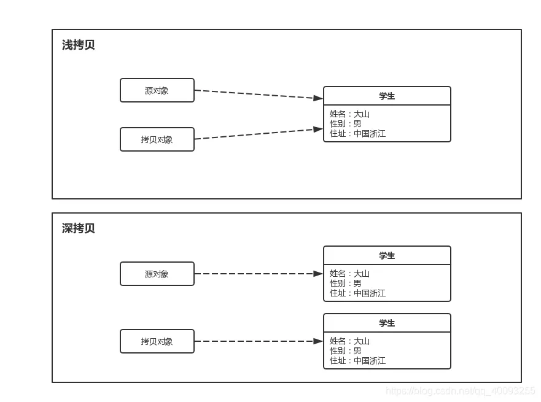
- 浅拷贝是指只复制对象本身和其内部的值类型字段，但不会复制对象内部的引用类型字段。换句话说，浅拷贝只是创建一个新的对象，然后将原对象的字段值复制到新对象中，但如果原对象内部有引用类型的字段，只是将引用复制到新对象中，两个对象指向的是同一个引用对象。
- 深拷贝是指在复制对象的同时，将对象内部的所有引用类型字段的内容也复制一份，而不是共享引用。换句话说，深拷贝会递归复制对象内部所有引用类型的字段，生成一个全新的对象以及其内部的所有对象。
堆和栈的区别是什么？
-
用途：栈主要用于存储局部变量、方法调用的参数、方法返回地址以及一些临时数据。每当一个方法被调用，一个栈帧（stack frame）就会在栈中创建，用于存储该方法的信息，当方法执行完毕，栈帧也会被移除。堆用于存储对象的实例（包括类的实例和数组）。当你使用
new关键字创建一个对象时，对象的实例就会在堆上分配空间。 - 生命周期：栈中的数据具有确定的生命周期，当一个方法调用结束时，其对应的栈帧就会被销毁，栈中存储的局部变量也会随之消失。堆中的对象生命周期不确定，对象会在垃圾回收机制（Garbage Collection, GC）检测到对象不再被引用时才被回收。
- 存取速度：栈的存取速度通常比堆快，因为栈遵循先进后出（LIFO, Last In First Out）的原则，操作简单快速。堆的存取速度相对较慢，因为对象在堆上的分配和回收需要更多的时间，而且垃圾回收机制的运行也会影响性能。
- 存储空间：栈的空间相对较小，且固定，由操作系统管理。当栈溢出时，通常是因为递归过深或局部变量过大。堆的空间较大，动态扩展，由JVM管理。堆溢出通常是由于创建了太多的大对象或未能及时回收不再使用的对象。
- 可见性：栈中的数据对线程是私有的，每个线程有自己的栈空间。堆中的数据对线程是共享的，所有线程都可以访问堆上的对象。
常见回收算法你知道哪些？
- 标记-清除算法：标记-清除算法分为“标记”和“清除”两个阶段，首先通过可达性分析，标记出所有需要回收的对象，然后统一回收所有被标记的对象。标记-清除算法有两个缺陷，一个是效率问题，标记和清除的过程效率都不高，另外一个就是，清除结束后会造成大量的碎片空间。有可能会造成在申请大块内存的时候因为没有足够的连续空间导致再次 GC。
- 复制算法：为了解决碎片空间的问题，出现了“复制算法”。复制算法的原理是，将内存分成两块，每次申请内存时都使用其中的一块，当内存不够时，将这一块内存中所有存活的复制到另一块上。然后将然后再把已使用的内存整个清理掉。复制算法解决了空间碎片的问题。但是也带来了新的问题。因为每次在申请内存时，都只能使用一半的内存空间。内存利用率严重不足。
- 标记-整理算法：复制算法在 GC 之后存活对象较少的情况下效率比较高，但如果存活对象比较多时，会执行较多的复制操作，效率就会下降。而老年代的对象在 GC 之后的存活率就比较高，所以就有人提出了“标记-整理算法”。标记-整理算法的“标记”过程与“标记-清除算法”的标记过程一致，但标记之后不会直接清理。而是将所有存活对象都移动到内存的一端。移动结束后直接清理掉剩余部分。
- 分代回收算法：分代收集是将内存划分成了新生代和老年代。分配的依据是对象的生存周期，或者说经历过的 GC 次数。对象创建时，一般在新生代申请内存，当经历一次 GC 之后如果对还存活，那么对象的年龄 +1。当年龄超过一定值(默认是 15，可以通过参数 -XX:MaxTenuringThreshold 来设定)后，如果对象还存活，那么该对象会进入老年代。
垃圾回收器有哪些？
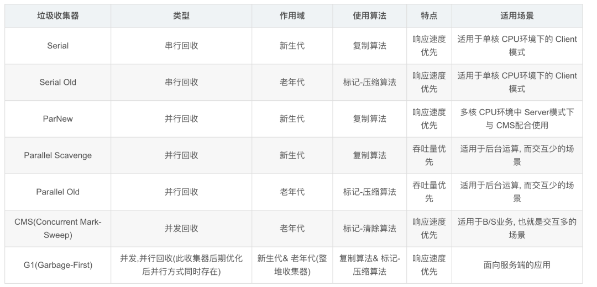
- Serial收集器（复制算法): 新生代单线程收集器，标记和清理都是单线程，优点是简单高效；
- ParNew收集器 (复制算法): 新生代收并行集器，实际上是Serial收集器的多线程版本，在多核CPU环境下有着比Serial更好的表现；
- Parallel Scavenge收集器 (复制算法): 新生代并行收集器，追求高吞吐量，高效利用 CPU。吞吐量 = 用户线程时间/(用户线程时间+GC线程时间)，高吞吐量可以高效率的利用CPU时间，尽快完成程序的运算任务，适合后台应用等对交互相应要求不高的场景；
- Serial Old收集器 (标记-整理算法): 老年代单线程收集器，Serial收集器的老年代版本；
- Parallel Old收集器 (标记-整理算法)： 老年代并行收集器，吞吐量优先，Parallel Scavenge收集器的老年代版本；
- CMS(Concurrent Mark Sweep)收集器（标记-清除算法）： 老年代并行收集器，以获取最短回收停顿时间为目标的收集器，具有高并发、低停顿的特点，追求最短GC回收停顿时间。
- G1(Garbage First)收集器 (标记-整理算法)： Java堆并行收集器，G1收集器是JDK1.7提供的一个新收集器，G1收集器基于“标记-整理”算法实现，也就是说不会产生内存碎片。此外，G1收集器不同于之前的收集器的一个重要特点是：G1回收的范围是整个Java堆(包括新生代，老年代)，而前六种收集器回收的范围仅限于新生代或老年代
1. float/double所占字节分别是多少？
float类型占用4个字节，double类型占用8个字节。
其他变量大小如下图：
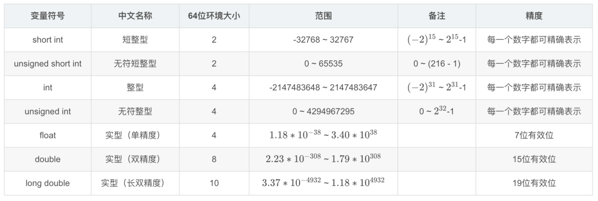
2. 深拷贝和浅拷贝的区别？
- 浅拷贝是指将一个对象的值复制到另一个对象，包括对象中的数据和指向动态分配内存的指针。这意味着原始对象和拷贝对象将共享同一块内存，当其中一个对象修改数据时，另一个对象也会受到影响。这可能导致潜在的问题，尤其是在释放内存时可能会发生错误。
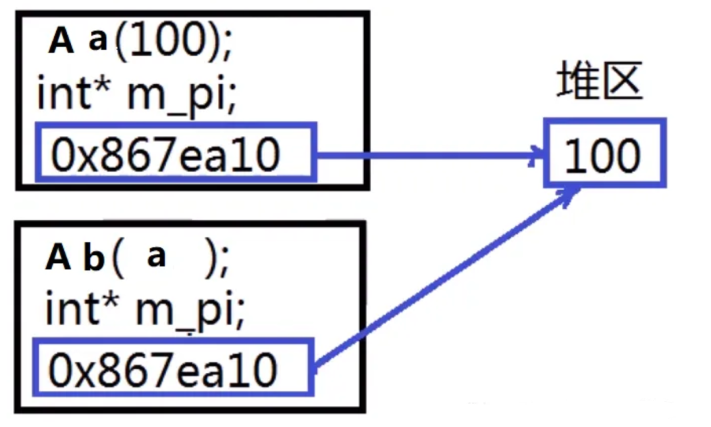
- 深拷贝是指创建一个新的对象，并复制原始对象的所有数据和指针指向的数据。这意味着原始对象和拷贝对象将拥有彼此独立的内存空间，彼此之间的修改不会相互影响。深拷贝通常需要在拷贝过程中分配新的内存，并将原始对象的数据复制到新的内存中。
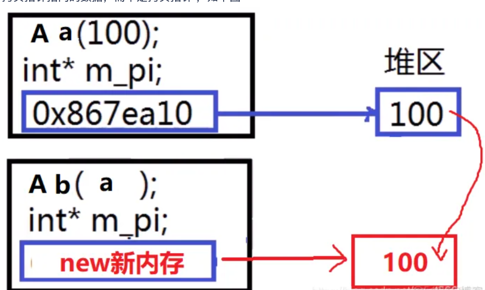
3. ++i和i++的区别？
++i和i++都是C++中的自增运算符，它们的区别在于它们的行为和返回值。
-
++i是前置自增运算符，它会先将变量i的值加1，然后返回加1后的值。也就是说，++i会先执行自增操作，再使用自增后的值。 -
i++是后置自增运算符，它会先返回变量i的当前值，然后再将i的值加1。也就是说，i++会先使用当前值，再执行自增操作。
下面是一个示例代码，展示了++i和i++的使用：
#include <iostream>
int main() {
int i = 0;
std::cout << "Before increment: " << i << std::endl;
int result1 = ++i;
std::cout << "After pre-increment: " << i << std::endl;
std::cout << "Result of pre-increment: " << result1 << std::endl;
int result2 = i++;
std::cout << "After post-increment: " << i << std::endl;
std::cout << "Result of post-increment: " << result2 << std::endl;
return 0;
}
输出结果将是：
Before increment: 0
After pre-increment: 1
Result of pre-increment: 1
After post-increment: 2
Result of post-increment: 1
可以看到，++i先将i的值加1，再返回加1后的值，而i++先返回i的当前值，再将i的值加1。
4. 多态是什么？怎么实现的？
C++的多态是通过虚函数（virtual function）和指向基类的指针或引用来实现的。在基类中声明虚函数，派生类中重写该函数，通过基类指针或引用调用该函数，就可以实现运行时多态。
多态的实现原理主要涉及到两个概念：虚函数表（vtable）和虚函数指针（vptr）。每个含有虚函数的类，或者从这样的类派生的类，都有一个虚函数表。这个表中存储了虚函数的地址。类的对象中包含一个虚函数指针，指向这个虚函数表。当我们通过基类的指针或引用调用虚函数时，实际上是通过这个虚函数指针找到虚函数表，然后在表中查找并调用相应的函数。这个过程是在运行时完成的，所以可以实现运行时多态。
多态性的实现主要依靠两个机制：继承和虚函数。
- 继承：派生类可以继承基类的属性和方法。通过继承，派生类可以具有基类的行为和特征。
- 虚函数：在基类中声明一个虚函数，派生类可以对该虚函数进行重写。通过使用虚函数，可以在运行时根据实际对象的类型来调用相应的函数，而不是根据指针或引用的类型。
实现多态的步骤如下：
- 定义基类：定义一个基类，并在其中声明一个或多个虚函数。
- 派生类：从基类派生出一个或多个派生类，并在派生类中重写基类的虚函数。
- 使用基类指针或引用：使用基类类型的指针或引用来引用派生类对象。这样做可以根据实际对象的类型来调用相应的函数。
下面是一个简单的示例代码，展示了多态的实现：
#include <iostream>
class Animal {
public:
virtual void makeSound() {
std::cout << "Animal makes a sound." << std::endl;
}
};
class Dog : public Animal {
public:
void makeSound() override {
std::cout << "Dog barks." << std::endl;
}
};
class Cat : public Animal {
public:
void makeSound() override {
std::cout << "Cat meows." << std::endl;
}
};
int main() {
Animal* animal1 = new Dog();
Animal* animal2 = new Cat();
animal1->makeSound(); // Output: Dog barks.
animal2->makeSound(); // Output: Cat meows.
delete animal1;
delete animal2;
return 0;
}
在上述代码中，Animal是基类，Dog和Cat是派生类。Animal类中声明了一个虚函数makeSound，派生类Dog和Cat分别重写了这个虚函数。
在main函数中，通过基类指针animal1和animal2分别引用了Dog和Cat对象，并调用了makeSound函数。由于makeSound函数是虚函数，所以根据实际对象的类型，调用了相应的函数。
输出结果将是：
Dog barks.
Cat meows.
可以看到，通过多态性，我们可以根据实际对象的类型来调用相应的函数，而不需要显式地判断对象的类型。这样可以提高代码的灵活性和可维护性。
5. 重载和重写的区别？
重载（overload）即函数重载：根据函数的参数列表的不同，可以定义多个同名函数。重载函数可以有不同的参数类型、参数个数或参数顺序。编译器根据函数调用时提供的参数来确定调用哪个重载函数。重载函数的返回类型可以相同也可以不同。
重载有两个常见的问题：
- 第一个：一个类方法名和参数数量、类型和顺序都是一样的，但是返回值类型不一样，是否构成重载？答案是不构成，因为重载不以返回值类型不同作为函数重载的条件。
- 第二个问题，一个方法加了 const 和不加 const 是否构成重载？答案是构成重载的
重写（Override）是指在派生类中重新定义基类的虚函数。重写函数具有相同的函数名、参数列表和返回类型。通过重写，派生类可以改变基类虚函数的实现，以适应派生类的特定需求。重写函数必须与基类函数具有相同的签名（函数名、参数列表和返回类型），并且使用override关键字进行显式标记。
6. 引用和指针的区别？
指针从本质上讲就是存放变量地址的一个变量，在逻辑上是独立的，它可以被改变，包括其所指向的地址的改变和其指向的地址中所存放的数据的改变。
而引用是一个别名，它在逻辑上不是独立的，它的存在具有依附性，所以引用必须在一开始就被初始化，而且其引用的对象在其整个生命周期中是不能被改变的（自始至终只能依附于同一个变量）。
它们之间有几个主要的不同：
- 不存在空引用。引用必须连接到一块合法的内存。
- 一旦引用被初始化为一个对象，就不能被指向到另一个对象。指针可以在任何时候指向到另一个对象。
- 引用必须在创建时被初始化。指针可以在任何时间被初始化。
- 引用是类型安全的，而指针不是 (引用比指针多了类型检查）
C++ malloc和new的区别
- 语法不同：malloc/free是一个C语言的函数，而new/delete是C++的运算符。
- 分配内存的方式不同：malloc只分配内存，而new会分配内存并且调用对象的构造函数来初始化对象。
- 返回值不同：malloc返回一个 void 指针，需要自己强制类型转换，而new返回一个指向对象类型的指针。
- malloc 需要传入需要分配的大小，而 new 编译器会自动计算所构造对象的大小
C++多态特性是什么？
多态是面向对象编程（OOP）的重要特性之一，它允许不同的对象对同一消息（函数调用）做出不同的响应。在 C++ 中，多态主要通过虚函数来实现。
多态有静态多态和动态多态两种：
- 静态多态（编译时多态）：主要通过函数重载来实现。函数重载是指在同一个作用域内，可以有多个同名函数，但是它们的参数列表（参数个数、参数类型或者参数顺序）不同。例如：
int add(int a, int b) {
return a + b;
}
double add(double a, double b) {
return a + b;
}
当调用add函数时，编译器会根据传入的参数类型和个数在编译时期就确定调用哪个版本的add函数。
- 动态多态（运行时多态）：基于虚函数和继承来实现。它允许在运行时根据对象的实际类型来调用相应的函数。当一个类包含虚函数时，编译器会为这个类创建一个虚函数表。虚函数表是一个函数指针数组，其中存储了这个类的虚函数的地址。每个包含虚函数的类的对象中都会包含一个虚函数指针，这个指针指向该类的虚函数表。当通过基类指针或引用调用虚函数时，程序会根据虚函数指针找到对应的虚函数表，然后在虚函数表中查找要调用的虚函数的实际地址，从而实现根据对象的实际类型来调用函数。
C++特性介绍一下？
答：讲了封装继承多态.
- 封装是将一些数据和函数封装到类中，这样外层调用类只会调用到设计者想让他调用的方法；
- 继承的话，我常是设计一个基类，然后分别设置子类去继承基类的一些方法，尤其是虚函数，针对不同子类的特点对虚函数进行重写。
- 继承还有公有和私有两种方法，公有继承是将基类的成员都原封不动的继承下来，私有继承则会将其改为私有部分；多态的话，是有函数重载和之前提到的虚函数，函数重载是可以使得相同的函数面对不同的参数个数或者类型进行不同的方式实现。
讲一下多态的理解
答：多态的话，我的理解是函数重载和虚函数，函数重载的好处我认为是同一个函数名可以对不同的参数类型或者参数个数进行不同的实现；虚函数我认为是可以使得子类在继承父类的时候，基于子类的特点重写父类的一些函数。
实际上用的话，虚函数是怎么用的？
答：将子类指针赋给父类对象，然后通过父类对象调用子类的虚函数，也可以通过作用域去调用父类的虚函数。
除了指针，你认为引用可以实现吗？
答：我认为应该可以
为什么呢，你对引用的理解是什么？
答：因为我认为引用其实相当于变量的地址值，类似一个指针。
那么引用是不是可以理解为const的一个指针？
答：我认为是可以的
现在有一个类，用g++去编译它，编译器会给它生成哪些函数？
答：默认构造函数，析构函数，默认拷贝构造函数。
这时候用sizeof对这个类计算一下，得到的是多少？
答：1
为什么呢？
答：我就说了C++是固定地址的，如果是0的话，调用的时候会有地址冲突。
说到这个sizeof，你觉得它是函数吗？
答：它是运算符
运算符的话，一般在什么时候给它定好？
答：编译阶段
现在定义一个函数，函数的形参是B，是一个int数组，int b[10]，现在传入一个int c[5]实参那么此时sizeof(b)的大小是多少？
答：一个指针的大小, 指针的大小通常是4或8字节，具体取决于操作系统和编译器的位数。如果是 32 位操作系统则是 4 字节, 64 位操作系统是 8 字节
sizeof和C的大小无关吗？
答：我认为是的
STL用map去删除元素的时候，用迭代器去删除，要注意哪些东西？
答：
错误的写法：
map<string,int> testMap;
for(auto it = testMap.begin(); it != testMap.end(); ++it)
{
if(it->second == xxx)
{
testMap.erase(it); //这里会出问题
}
}
错误原因：it指针被erase之后会失效，for循环中对it操作其结果都是不可预料的，可能造成程序崩溃。
正确的写法：
map<string,int> testMap;
for(auto it = testMap.begin(); it != testMap.end();)
{
if(it->second == xxx)
{
testMap.erase(it++);
}
else
{
it++;
}
}
正确原因：新写法的迭代器的自增从for头部中取出，放在循环体中。it++返回了自增前的迭代器的一个临时拷贝。然后这个临时迭代器指向的内容被删除了，但是it本身已经自增到下一个位置了，不受影响。
list其实是一个链表，deque是一个队列，那么你认为list和deque的区别是什么？
答：一个内存空间是不连续的，一个是段连续的。
那么deque是不是可以用list去实现呢？
答：我认为是的
1. c++ list与vector的区别是什么？
- 底层实现的区别：vector基于动态数组实现，元素在内存中连续存储，list基于双向链表实现，元素分散存储在内存中，通过指针连接
-
访问效率的区别：vector支持随机访问，通过索引
[]或at()访问元素的时间复杂度为 O (1)，list不支持随机访问，访问元素需要从头或尾遍历，时间复杂度为 O (n) - 内存利用率的区别：vector内存利用率高，只需存储元素本身，内存连续，list需要额外空间存储前后指针，内存开销更大，且可能存在内存碎片
- 插入和删除操作的区别：vector在尾部插入 / 删除效率高（O (1)），在中间或头部插入 / 删除需要移动大量元素，效率低（O (n)），可能需要重新分配内存并复制元素；而 list 在任何位置插入 / 删除元素（已知迭代器位置时）效率都很高（O (1)），不需要移动元素，只需调整指针，不会导致内存重新分配。
- 适用场景的区别：vecto适合r需要频繁随机访问元素、主要在尾部进行插入 / 删除操作、元素数量相对稳定的场景，而 list 适合需要频繁在任意位置插入 / 删除元素，不需要随机访问元素，元素数量动态变化较大的场景
2. c++ sort的优化策略是什么？
td::sort主要是三种算法的结合体：插入排序，快速排序，堆排序。
| 算法 | 时间复杂度 | 优点 | 缺点 |
|---|---|---|---|
| 插入排序 | O(N*N) | 当数据量很少时，效率比较高。 | 当数据量比较大时，时间复杂度比较高。 |
| 快速排序 | 平均 O(NlogN)，最坏 O(NxN) | 大部分时候性能比较好。 | 算法时间复杂度不稳定，数据量大时递归深度很大，影响程序工作效率。 |
| 堆排序 | O(N*logN) | 算法时间复杂度稳定，比较小，适合数据量比较大的排序。 | 堆排序在建堆和调整堆的过程中会产生比较大的开销，数据量少的时候不适用。 |
std::sort 根据上文提到的几种算法的优缺点，对排序算法进行整合。
- 快速排序，递归排序到一定深度后，数据已经被分为多个子区域，子区域里面的数据可能是无序的，但是子区域之间已经是有序了。
- 在这多个子区域里，如果某个子区域数据个数大于阈值（16），采用堆排序，使得某个子区域内部有序。
- 剩下的没有被堆排序的小区域，数据量都是小于阈值的，最后整个数据区域采用插入排序。
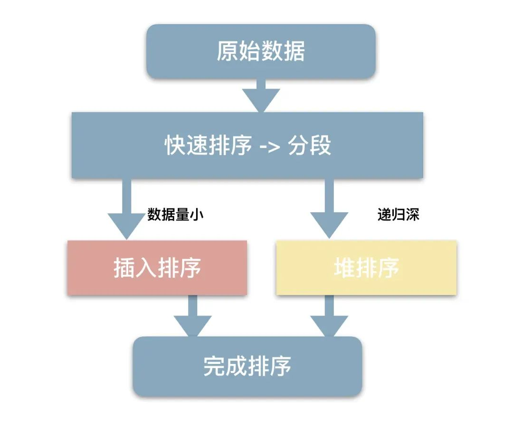
-
std::sort 采用的是分治思维，先采用快速排序，将整个区域分成多个子区域，每个子区域内部根据数据量采用不同算法。
-
分治后，各个子区域局部有序后再通过整个区域进行排序。
4. unorder_map底层的hash表是怎么实现的？
C++ 中的 unordered_map 底层采用哈希表（Hash Table）实现，其核心结构是一个由桶（bucket）组成的数组，每个桶会指向一个链表用于存储哈希冲突的元素。
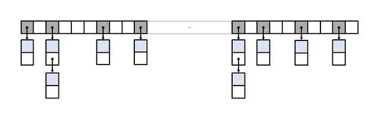
具体实现机制如下：哈希表的基础是数组（桶数组），每个元素通过哈希函数计算得到一个哈希值，再通过哈希值映射到数组的特定索引（桶位置）。
- 当插入键值对时，首先对键应用哈希函数得到哈希值，然后通过取模运算（通常是对桶数组大小取模）确定该元素应存入的桶。如果多个键计算后映射到同一个桶（即哈希冲突），这些元素会被存储在该桶对应的链表中（链地址法解决冲突）。
- 在查找元素时，同样先对键计算哈希值找到对应的桶，再遍历该桶的链表（或其他结构），通过键的相等性比较找到目标元素。
为了保证操作效率，哈希表会在元素数量达到一定阈值（负载因子，通常为 1.0）时进行扩容：创建一个更大的桶数组（通常是原大小的两倍），然后将所有现有元素重新计算哈希并迁移到新的桶中，以减少哈希冲突，维持查找、插入、删除操作的平均 O(1) 时间复杂度。
C++中的内存分区有哪些？
在C++中，内存主要分为以下五个区域：
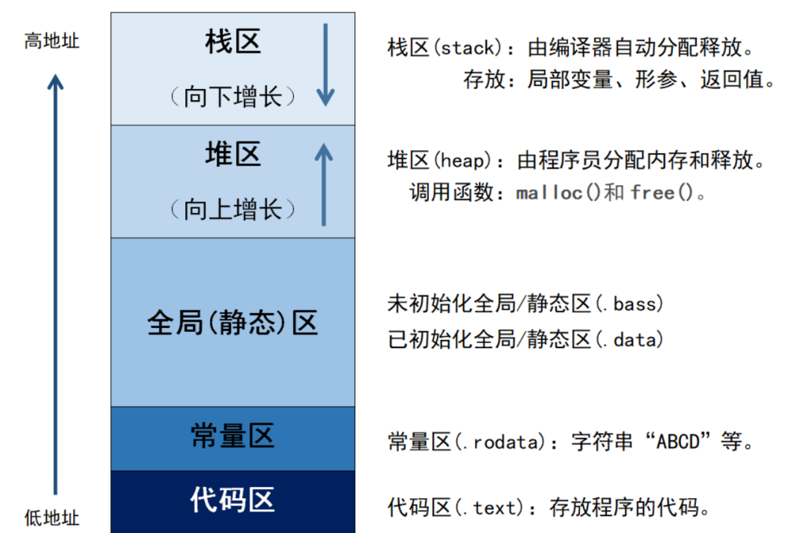
- 栈区（Stack）：由编译器自动分配释放，存放函数的参数值，局部变量等。其操作方式类似于数据结构中的栈。
- 堆区（Heap）：一般由程序员分配释放，若程序员不释放，程序结束时可能由OS回收。注意，与数据结构中的堆是两回事，分配方式倒是类似于链表。
- 全局区（静态区）（Static）：全局变量和静态变量被分配到同一块内存中。在C++中，全局区还包含了常量区，字符串常量和其他常量也是存储在此。
- 常量区：是全局区的一部分，存放常量，不允许修改。
- 代码区（Text）：存放函数体的二进制代码。
介绍一下内存对齐
内存对齐就是就是将数据存放在内存的某个位置，使得CPU可以更快地访问到这个数据，以空间换时间的方式来提高 cpu 访问数据的性能。
在C++中，内存对齐主要涉及到两个概念：对齐边界和填充字节。
- 对齐边界：一般情况下，编译器会自动地将数据存放在它的自然边界上。例如，int类型的数据，它的大小为4字节，编译器会将其存放在4的倍数的地址上。这就是所谓的对齐边界。
- 填充字节：为了满足对齐边界的要求，编译器有时候需要在数据之间填充一些字节。这些字节没有实际的意义，只是为了满足内存对齐的要求。
为什么要字节对齐？
- 平台原因(移植原因)：不是所有的硬件平台都能访问任意地址上的任意数据的；某些硬件平台只能在某些地址处取某些特定类型的数据，否则抛出硬件异常。
- 性能原因：数据结构(尤其是栈)应该尽可能地在自然边界上对齐。原因在于，为了访问未对齐的内存，处理器需要作两次内存访问；而对齐的内存访问仅需要一次访问。
vector中push_back和emplace_back的区别？
- push_back() 向容器尾部添加元素时，首先会创建这个元素，然后再将这个元素拷贝或者移动到容器中（如果是拷贝的话，事后会自行销毁先前创建的这个元素）；
- 而emplace_back() 在实现时，则是直接在容器尾部创建这个元素，省去了拷贝或移动元素的过程。
C++中的多态怎么实现的？
C++中的多态主要通过虚函数和继承来实现。多态分为两种：编译时多态和运行时多态。
- 编译时多态：也称为静态多态或早绑定。这种多态是通过函数重载和模板来实现的。
- 运行时多态：也称为动态多态或晚绑定。这种多态是通过虚函数和继承来实现的。当基类的指针或引用指向派生类对象时，调用的虚函数将是派生类的版本，这就实现了运行时多态。
什么是纯虚函数？有哪些应用场景
纯虚函数是在基类中声明的虚函数，它在基类中没有定义，但要求任何派生类都要定义自己的实现方法。在C++中，纯虚函数的声明形式如下：
virtual void function() = 0;
其中，= 0就表示这是一个纯虚函数。
含有纯虚函数的类被称为抽象类。抽象类不能被实例化，只能作为接口使用。派生类必须实现所有的纯虚函数，否则该派生类也会变成抽象类。
纯虚函数的应用场景主要包括：
- 设计模式：例如在模板方法模式中，基类定义一个算法的骨架，而将一些步骤延迟到子类中。这些需要在子类中实现的步骤就可以声明为纯虚函数。
- 接口定义：可以创建一个只包含纯虚函数的抽象类作为接口。所有实现该接口的类都必须提供这些函数的实现。
为什么一般将析构函数设置为虚函数？
析构函数被设为虚函数主要是为了解决基类指针指向派生类对象时的资源释放问题。
如果我们有一个基类指针，它实际上指向一个派生类对象，当我们删除这个基类指针时，如果析构函数不是虚函数，那么就只会调用基类的析构函数，而不会调用派生类的析构函数。这可能会导致派生类对象的一些资源没有被正确释放，从而引发内存泄漏等问题。
如果我们将析构函数设置为虚函数，那么在删除基类指针时，会首先调用派生类的析构函数，然后再调用基类的析构函数，从而确保所有的资源都能被正确释放。
什么是内联函数？
在C++中，使用关键字"inline"可以声明一个内联函数。声明为内联函数的函数会在编译时被视为候选项，编译器会尝试将其展开，将函数体直接插入到调用点处。这样可以避免函数调用的开销，减少了函数调用的栈帧等额外开销，从而提高程序的执行效率。
内联函数有什么缺点？
内联函数的缺点主要有以下几点：
- 代码膨胀：内联函数会在每个调用它的地方进行代码替换，这可能导致代码膨胀。如果内联函数体非常大或者被频繁调用，会增加可执行文件的大小，可能导致缓存不命中，影响性能。
- 编译时间增加：内联函数需要在每个调用点进行代码替换，这会增加编译时间。特别是当内联函数被广泛使用时，编译时间可能会显著增加。
- 可读性降低：内联函数会将函数体嵌入到调用点，可能导致代码的可读性降低。函数体被分散在多个地方，可能会使代码难以理解和维护。
最熟悉的设计模式有哪些？
单例模式、工厂模式、策略模式、装饰器模式这些。
- 单例模式：保证一个类仅有一个实例，并提供一个访问它的全局访问点。
- 工厂模式：定义一个创建对象的接口，让子类决定实例化哪个类。工厂方法使一个类的实例化延迟到其子类。
- 策略模式：定义一系列的算法，把它们一个个封装起来，并且使它们可以相互替换。该模式使得算法可以独立于使用它的客户而变化。
- 装饰器模式：动态地给一个对象添加一些额外的职责。就增加功能来说，装饰器模式相比生成子类更为灵活。
代理模式讲一下
代理模式为其他对象提供一种代理以控制对这个对象的访问。
在代理模式中，代理对象与目标对象实现相同的接口，客户端对目标对象的访问实际上是通过代理对象来进行的，代理对象可以在调用目标对象的方法前后进行一些额外的操作，如权限验证、缓存处理、日志记录等。
代理模式实现有这些：
- 静态代理：手动编写代理类，需实现与目标对象相同的接口。优点是简单直观，缺点是每个目标类需对应一个代理类，代码冗余。
-
动态代码：运行时动态生成代理类，无需手动编写。JDK动态代理是基于接口，使用
java.lang.reflect.Proxy，CGLIB动态代理：基于继承，可代理无接口的类。
8. 单例模式的应用场景有哪些？
单例模式的核心是确保一个类只有一个实例，并提供全局访问点。它适用于需要严格控制资源唯一性或全局共享状态的场景。以下是单例模式的典型应用场景及具体分析：
- 全局配置管理：应用程序的配置信息（如数据库连接参数、系统路径、环境变量等）需要全局唯一且一致，用了单例模式之后避免多次读取配置文件，节省资源。
- 日志记录器：所有模块需要向同一个日志文件写入日志，确保日志顺序和一致性，用了单例模式之后可以避免多个日志实例竞争文件资源。
- 数据库连接池：管理数据库连接，避免频繁创建和销毁连接带来的性能开销，连接池需要全局唯一，统一分配和回收连接。
对面向对象的理解？
像面向过程就是把问题分解成一个一个函数，然后调用函数去解决问题。而面向对象就是把这个世界抽象成一个一个对象，然后赋予这些对象一个属性，成员变量和方法，然后去调用对象的方法去解决问题，耦合性比较低。
面向过程的方法存在哪些问题？
耦合度比较高，分工不好分工。
补充：
-
可维护性较差：面向过程编程主要依赖于函数和过程，随着代码规模的增大，可能会导致代码结构复杂，不易维护。
-
可复用性较低：面向过程编程难以实现模块化，导致代码难以复用，进一步增加开发时间和成本。
-
扩展性不足：面向过程编程在代码逻辑发生变化时，往往需要对程序进行大量的修改，这样的代码扩展性不足。
-
抽象能力有限：面向过程编程主要关注过程和算法，而不是数据结构和对象，这使得它在表达现实世界的复杂问题时抽象能力有限。
-
封装性差：面向过程编程没有提供良好的封装机制，程序中的数据和处理过程容易暴露，可能导致数据安全性和程序稳定性问题。
-
强耦合：面向过程编程的方法往往导致程序组件之间存在强耦合，当一个组件发生变化时，可能会影响其他组件的正常工作。
面向过程好处是什么？
解决问题思路比较简单。
补充：
- 面向过程编程采用自顶向下的编程方式，将问题分解为一个个小的模块，便于理解和编写。
- 每个模块相对独立，出现问题时可以单独调试，降低了调试难度。
- 面向过程编程适合解决简单、逻辑性强的问题，对于初学者来说，学习成本较低。
1. 堆和栈的区别是什么？
-
内存的分配和释放：栈内存的分配和释放由系统自动处理，在函数调用时，函数的局部变量、参数等会被压入栈中；函数执行结束，这些变量所占内存会自动释放。堆内存需要手动进行内存的分配和释放，使用
new操作符来分配内存，使用delete操作符释放内存；若使用malloc函数分配内存，就用free函数释放。要是忘记释放堆上的内存，会造成内存泄漏。 - 内存分配效率：栈于是系统自动管理，栈的内存分配和释放速度较快。它只是简单地移动栈指针，开销很小。堆的内存分配和释放相对较慢，因为操作系统需要在堆中寻找合适大小的空闲内存块，并且要处理内存碎片等问题。
- 数据访问效率：栈上的数据访问速度较快，因为栈指针的移动是连续的，数据通常在高速缓存中，能快速访问。堆上的数据访问速度相对较慢，因为堆中的内存分配是不连续的，可能会导致缓存不命中，增加访问时间。
- 数据存储的方式：栈上的数据是按照后进先出（LIFO）的顺序存储的。新的数据会被压入栈顶，释放时从栈顶开始依次释放。堆上的数据存储没有特定的顺序。内存分配是动态的，操作系统会根据当前堆的使用情况来分配内存。
下面是一个简单的 C++ 代码示例，展示了栈和堆的使用：
#include <iostream>
int main() {
// 栈上分配内存
int stackVariable = 10;
std::cout << "Stack variable: " << stackVariable << std::endl;
// 堆上分配内存
int* heapVariable = newint(20);
std::cout << "Heap variable: " << *heapVariable << std::endl;
// 释放堆上的内存
delete heapVariable;
return0;
}
2. c++三大特性介绍一下？
c++的三大特性，说白了其实就是面向对象的三大特性，是指：封装、继承、多态，简单说明如下：
- 封装是一种技术，它使类的定义和实现分离，也就是隐藏了实现细节，只留下接口给他人调用，另外封装还有一层意义是它把某种事物具现出属性和方法并形成了一个整体，就像一个人，同时具有身高和身体等等这些，才是完整的人，如果不封装，那这个人就相当于四分五裂了；
- 继承，所谓继承，其实就是真实意义上讲的继承了某些东西，放到c++的类里面，其实就是实现了代码的重用，即派生类要使用基类的属性和方法，就不用再重新编写代码，这种可以算是实现继承。还有一种就是继承了某样东西，但是派生类需要重新实现一下，也就是接口继承，下面第三点要讲的多态就是接口继承的典型代表；
- 多态，多种形态，就是我们使用基类的指针或者引用调用基类的某个函数时，编译期并不知道到底是要调用哪个函数，因为我们不能确定这个指针或者引用到底指向基类对象还是派生类对象，直到运行时才能确定，这个就叫多态。
5. 引用和指针的区别是什么？
指针和引用主要有以下区别：
- 引用必须被初始化，但是不分配存储空间。指针不声明时初始化，在初始化的时候需要分配存储空间。
- 引用初始化后不能被改变，指针可以改变所指的对象。
- 不存在指向空值的引用，但是存在指向空值的指针。
从概念上讲。指针从本质上讲就是存放变量地址的一个变量，在逻辑上是独立的，它可以被改变，包括其所指向的地址的改变和其指向的地址中所存放的数据的改变。
而引用是一个别名，它在逻辑上不是独立的，它的存在具有依附性，所以引用必须在一开始就被初始化，而且其引用的对象在其整个生命周期中是不能被改变的（自始至终只能依附于同一个变量）。
除此之外还有如下区别：
- 指针是一个实体，而引用仅是个别名；
- 引用只能在定义时被初始化一次，之后不可变；指针可变；引用“从一而终”，指针可以“见异思迁”；
- 引用没有const，指针有const，const的指针不可变；
- 引用不能为空，指针可以为空；
- “sizeof 引用”得到的是所指向的变量(对象)的大小，而“sizeof 指针”得到的是指针本身的大小；
- 指针和引用的自增(++)运算意义不一样；
- 引用是类型安全的，而指针不是 (引用比指针多了类型检查）
传参区别：
#include <iostream>
usingnamespacestd;
void foo(int* ptr) {//指针
*ptr = 42;
cout<<"*ptr = "<<*ptr<<endl;//42
}
void foo1(int& ref) {//引用
ref = 5;
cout<<"ref = "<<ref<<endl;//5
}
int main() {
int x = 10;
int* ptr = &x;
foo1(x);
foo(ptr);
cout<<"x = "<<x<<endl;
return0;
}
C ++， Python 哪一个更快？
读者答：这个我不知道从哪方面说，就是 C + + 的话，它其实能够提供开发者非常多的权限，就是说它能涉及到一些操作系统级别的一些操作，速度应该挺快。然后 Python 实现功能还是蛮快的。
小林补充：
一般而言，C++更快一些，因为它是一种编译型语言，可以直接编译成机器码，在执行时不需要解释器的介入，因此执行效率较高。
Python是一种解释型语言，需要在运行时通过解释器将代码转换为机器码来执行，因此相对于C++而言，执行效率较低。但是Python具有很多优秀的库和框架，这些库和框架可以帮助开发人员快速开发出高效的应用程序，从而提高开发效率。
编译型语言和解释型语言有没有了解过
读者答：可能 C + + 它提供的更偏机器语言一样，就是只需要进行相关的编译查找就可以。但是 Python 的话它可能是更像脚本语言，所以说在进行执行的时候还需要再进行嗯，一方面的句子语法处理，所以执行速度上会慢一些。
链表跟数组有哪一些区别？
读者答：链表的长度是不固定的，对它进行相关的插入或者是删除操作是非常快的。查找需要从头到尾遍历值，效率低。
数组来说的话，数组的话是预先分配了一段固定长度的连续的内存空间，通过数组的下标索引来查找和赋值。但是如果要进行插入删除操作的话，那可能会需要就是将数据中你要插入那个位置之后的所有的数组来进行挪位，才能进行相关的插入操作，所以说它这个插入和删除的操作就会相比链表会麻烦。
小林补充：
可以提一下数组因为内存地址是连续，可以增加cpu缓存命中率，而链表的内存地址并不是连续的，cpu缓存命中率会很低。
数组怎么动态扩容？
读者答：go 的话它其实提供了一个 slice 这样子的结构，也就是说它底层维护了一个指向数组的指针，然后还维护了一个数组的长度和一个它的空间预存的一个 CAP 的容量值。然后如果将这个当前的数组 space 的大小它是小于 1024 的话，那基本上都是 2 倍的扩容，然后如果超过 1. 2 次的大小的话，基本上是 1. 25 倍的扩容。
1. 设计模式了解哪些？
- 单例模式：确保一个类只有一个实例，并提供全局访问点，适用场景数据库连接池、线程池、日志管理器等（避免重复创建消耗资源）。
- 工厂模式：定义创建对象的接口，让子类决定实例化哪个类，适用场景根据不同条件创建不同类型的对象（如游戏中根据难度生成敌人）。
- 代理模式：为其他对象提供一种代理以控制对这个对象的访问。适用场景远程代理（如访问远程服务器的对象）、保护代理（权限控制，如验证用户才能访问敏感数据）
- 装饰器模式：动态地给一个对象添加额外职责，比继承更灵活，适用场景给 UI 组件添加额外功能（如窗口添加滚动条、边框）。
-
策略模式：定义一系列算法，将每个算法封装起来，并使它们可以相互替换。适用场景根据运行时条件选择不同的算法（如排序策略、支付方式），可避免使用大量
if-else或switch语句。
2. 单例模式讲一下？
单例模式核心目标是确保一个类全局只有一个实例，并提供统一的访问点，适用场景
- 数据库连接池：避免创建多个连接池浪费资源。
- 日志管理器：所有模块共享同一个日志记录器，避免日志文件冲突。
- 配置文件读取器：全局统一读取配置，防止配置不一致。
线程安全版的单例模式实现如下
双重检查锁定：
public class Singleton {
privatestaticvolatile Singleton instance; // 使用 volatile 禁止指令重排
private Singleton() {}
public static Singleton getInstance() {
if (instance == null) { // 第一次检查，不加锁
synchronized (Singleton.class) { // 仅在第一次创建时加锁
if (instance == null) { // 第二次检查，避免多线程重复创建
instance = new Singleton();
}
}
}
return instance;
}
}
-
volatile关键字确保变量的可见性和禁止指令重排（防止半初始化对象被使用）。 - 双重检查：外层检查避免已创建实例时的锁竞争，内层检查确保多线程安全。
枚举实现：
public enum Singleton {
INSTANCE; // 枚举实例，全局唯一
// 可以添加方法
public void doSomething() {
System.out.println("单例方法被调用");
}
}
实现代码简单，也是线程安全的。
饿汉式：
public class Singleton {
// 类加载时就创建实例（不管是否使用）
private static final Singleton INSTANCE = new Singleton();
private Singleton() {}
public static Singleton getInstance() {
return INSTANCE; // 直接返回已创建的实例
}
}
JVM 保证类加载时只创建一个实例，所以是线程安全的。
3. 面向对象的特征有哪些？
Java面向对象的三大特性包括：封装、继承、多态：
- 封装：封装是指将对象的属性（数据）和行为（方法）结合在一起，对外隐藏对象的内部细节，仅通过对象提供的接口与外界交互。封装的目的是增强安全性和简化编程，使得对象更加独立。
- 继承：继承是一种可以使得子类自动共享父类数据结构和方法的机制。它是代码复用的重要手段，通过继承可以建立类与类之间的层次关系，使得结构更加清晰。
- 多态：多态是指允许不同类的对象对同一消息作出响应。即同一个接口，使用不同的实例而执行不同操作。多态性可以分为编译时多态（重载）和运行时多态（重写）。它使得程序具有良好的灵活性和扩展性。
对面向对象的理解
C++面向对象编程就是把一切事物都变成一个个对象，用属性和方法来描述对象的信息，比如定义一个猫对象，猫的眼睛、毛发、嘴巴就可以定义为猫对象的属性，猫的叫声和走路就可以定义为猫对象的方法。
用对象的方式编程，不仅方便了程序员，也使得代码的可复用性、可维护性变好。
C++面向对象的三大特性是封装、继承、多态。
-
封装：封装是将数据（变量）和操作数据的函数组合在一起形成一个"对象"，并隐藏了对象的内部细节。这可以防止外部代码直接访问对象的内部表示。
-
继承：继承是从现有类派生出新类的过程。新类包含了现有类的所有特性，并可以添加自己的新特性。这有助于代码重用和减少复杂性。
-
多态：多态是指允许使用一个接口来表示不同的类型。在C++中，多态可以通过虚函数实现，使得不同的对象可以以自己的方式响应相同的消息。
普通的函数和成员函数的区别？
- 普通函数是在类的外部定义的，而成员函数是在类的内部定义的。
- 普通函数不能直接访问类的私有（private）和保护（protected）成员，而成员函数可以访问类的所有成员，包括私有和保护成员。
- 普通函数可以直接调用，而成员函数需要通过类的对象来调用。
- 成员函数有一个特殊的指针this，它指向调用该成员函数的对象。普通函数没有这个指针。
this 指针是干嘛的？
this 指针是指向当前对象的地址。this指针主要用于在类的成员函数中访问当前对象的成员变量和成员函数。
当一个对象调用自己的成员函数时，编译器会隐式地将对象的地址传递给成员函数，作为一个隐藏的参数，这个隐藏的参数就是this指针。通过this指针，成员函数可以访问和操作当前对象的成员变量和成员函数。
this指针只能在非静态成员函数中使用，因为静态成员函数没有this指针，它们不属于任何具体的对象
static关键字的作用？
static:静态变量声明，分为局部静态变量，全局静态变量，类静态成员变量。也可修饰类成员函数。有以下几类：
-
局部静态变量：存储在静态存储区，程序运行期间只被初始化一次，作用域仍然为局部作用域，在变量定义的函数或语句块中有效，程序结束时由操作系统回收资源。
-
全局静态变量：存储在静态存储区，静态存储区中的资源在程序运行期间会一直存在，直到程序结束由系统回收。未初始化的变量会默认为0，作用域在声明他的文件中有效。
-
类静态成员变量：被类的所有对象共享，包括子对象。必须在类外初始化，不可以在构造函数内进行初始化。
-
类静态成员函数：所有对象共享该函数，不含this指针，不可使用类中非静态成员。
Vector扩容，什么情况1.5倍，什么情况2倍？
vector 在插入新的元素时但是之前的内存已经满的时候需要扩容，在VS下是1.5倍，在GCC 下是2 倍。
Vector的resize和reserve有什么区别？
-
resize:
resize(n)会改变vector的大小，使其包含n个元素。如果n大于当前的大小，那么新的元素会被添加到vector的末尾，如果n小于当前的大小，那么末尾的元素会被删除。resize会改变vector的size()。 -
reserve:
reserve(n)不会改变vector的大小，它只是预先分配足够的内存，以便在未来可以容纳n个元素。reserve不会改变vector的size()，但可能会改变capacity()。reserve的主要目的是为了优化性能，避免在添加元素时频繁进行内存分配。
简单来说，resize改变的是vector中元素的数量，而reserve改变的是vector的内存容量。
vector中push_back和emplace_back的区别？
emplace_back通常在性能上优于push_back，因为它可以避免不必要的复制或移动操作。
-
push_back() 向容器尾部添加元素时，首先会创建这个元素，然后再将这个元素拷贝或者移动到容器中（如果是拷贝的话，事后会自行销毁先前创建的这个元素）
-
而emplace_back() 在实现时，则是直接在容器尾部创建这个元素，省去了拷贝或移动元素的过程。
Map，set，unordered_map，unordered_set，底层是用了什么数据结构？
-
Map: 底层实现通常是红黑树，这是一种自平衡的二叉查找树。它可以保证插入、删除和查找的时间复杂度都是O(log n)。
-
Set: 与Map类似，Set的底层实现通常也是红黑树。Set是一种特殊的Map，只有键没有值。
-
Unordered_map: 底层实现通常是哈希表。哈希表可以提供平均时间复杂度为O(1)的查找。
-
Unordered_set: 与Unordered_map类似，Unordered_set的底层实现通常也是哈希表。Unordered_set是一种特殊的Unordered_map，只有键没有值。
哈希表的时间复杂度为什么是O（1）？
哈希表的时间复杂度为O(1)是因为它使用了一种叫做哈希函数的方法来直接计算出数据应该存储在哪个位置，而不需要逐个检查每个位置。这就像是你有一个巨大的文件柜，每个抽屉都有一个唯一的编号，你可以直接通过编号找到你需要的文件，而不需要从第一个抽屉开始逐个查找。
当你插入、删除或查找一个元素时，哈希表首先使用哈希函数计算出元素的哈希值，然后使用这个哈希值作为索引直接访问到数组中的相应位置。因此，这些操作的时间复杂度都是O(1)。
哈希冲突怎么办？
如果多个元素的哈希值相同，那么这些元素就需要存储在同一个位置，通常是通过链表或者开放寻址的方式来解决。c++ stl 是采用了链表法来解决哈希冲突的问题。
线程池的优点是什么？
线程池是为了减少频繁的创建线程和销毁线程带来的性能损耗。
创建和销毁线程是比较昂贵的操作。每次创建线程时，操作系统需要为其分配内存、初始化线程栈等资源；销毁线程时，又要进行资源回收。而线程池中的线程可以被重复使用，当有新任务提交时，直接从线程池中获取空闲线程来执行任务，避免了频繁创建和销毁线程带来的资源消耗，提高了系统的性能。
而且线程池可以限制系统中线程的数量。如果不使用线程池，在高并发场景下，可能会创建大量的线程，导致系统资源耗尽，甚至出现系统崩溃的情况。通过线程池，可以根据系统的实际情况设置线程的最大数量，确保系统资源的合理使用。
线程池的工作原理如下图：
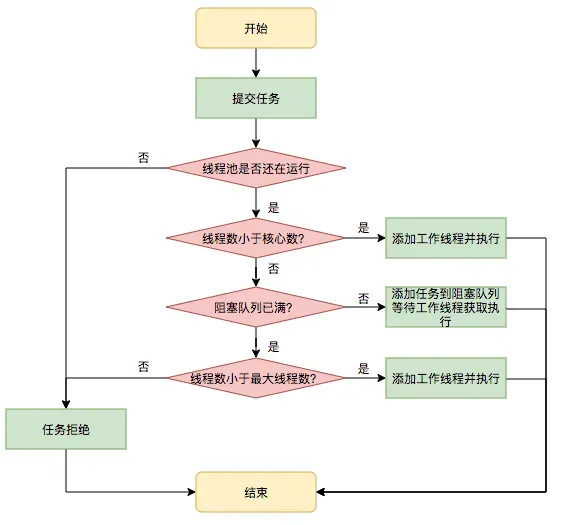
线程池分为核心线程池，线程池的最大容量，还有等待任务的队列，提交一个任务，如果核心线程没有满，就创建一个线程，如果满了，就是会加入等待队列，如果等待队列满了，就会增加线程，如果达到最大线程数量，如果都达到最大线程数量，就会按照一些丢弃的策略进行处理。
数组和链表的区别？
- 访问效率：数组可以通过索引直接访问任何位置的元素，访问效率高，时间复杂度为O(1)，而链表需要从头节点开始遍历到目标位置，访问效率较低，时间复杂度为O(n)。
- 插入和删除操作效率：数组插入和删除操作可能需要移动其他元素，时间复杂度为O(n)，而链表只需要修改指针指向，时间复杂度为O(1)。
- 缓存命中率：由于数组元素在内存中连续存储，可以提高CPU缓存的命中率，而链表节点不连续存储，可能导致CPU缓存的命中率较低，频繁的缓存失效会影响性能。
- 应用场景：数组适合静态大小、频繁访问元素的场景，而链表适合动态大小、频繁插入、删除操作的场景
STL 容器中优先级队列 priority_queue 的底层原理
priority_queue 优先级队列之所以总能保证优先级最高的元素位于队头，最重要的原因是其底层采用堆数据结构存储结构。
有读者可能会问，priority_queue 底层不是采用 vector 或 deque 容器存储数据吗，这里又说使用堆结构存储数据，它们之间不冲突吗？显然，它们之间是不冲突的。
priority_queue 底层采用 vector 或 deque 容器存储数据和采用堆数据结构是不冲突的。
首先，vector 和 deque 是用来存储元素的容器，而堆是一种数据结构，其本身无法存储数据，只能依附于某个存储介质，辅助其组织数据存储的先后次序。
其次，priority_queue 底层采用 vector 或者 deque 作为基础容器，这毋庸置疑。但由于 vector 或 deque 容器并没有提供实现 priority_queue 容器适配器 “First in,Largest out” 特性的功能，因此 STL 选择使用堆来重新组织 vector 或 deque 容器中存储的数据，从而实现该特性。
简单的理解堆，它在是完全二叉树的基础上，要求树中所有的父节点和子节点之间，都要满足既定的排序规则：
- 如果排序规则为从大到小排序，则表示堆的完全二叉树中，每个父节点的值都要不小于子节点的值，这种堆通常称为大顶堆；
- 如果排序规则为从小到大排序，则表示堆的完全二叉树中，每个父节点的值都要不大于子节点的值，这种堆通常称为小顶堆；
下图展示了一个由 {10,20,15,30,40,25,35,50,45} 这些元素构成的大顶堆和小顶堆。其中经大顶堆组织后的数据先后次序变为 {50,45,40,20,25,35,30,10,15}，而经小顶堆组织后的数据次序为{10,20,15,25,50,30,40,35,45}。
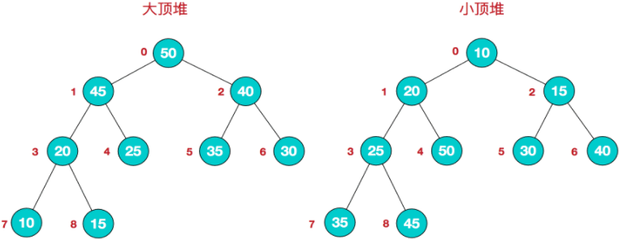
可以看到，大顶堆中，每个父节点的值都不小于子节点；同样在小顶堆中，每个父节点的值都不大于子节点。但需要注意的是，无论是大顶堆还是小顶堆，同一父节点下子节点的次序是不做规定的，这也是经大顶堆或小顶堆组织后的数据整体依然无序的原因。
可以确定的一点是，无论是通过大顶堆或者小顶堆，总可以筛选出最大或最小的那个元素（优先级最大），并将其移至序列的开头，此功能也正是 priority_queue 容器适配器所需要的。
双向队列底层是如何实现的
vector底层采用的是一个数组来实现，list底层采用的是一个环形的双向链表实现，而deque则采用的是两者相结合，所谓结合，并不是两种数据结构的结合，而是某些性能上的结合。我们知道， vector支持随机访问，而list支持常量时间的删除，deque支持的是随机访问以及首尾元素的插入删除 。
deque与vector的最大差异，一是deque允许常数时间内对起头端进行元素的插入和删除，二是deque没有所谓的容量概念，因为它是以分段连续空间组合而成，随时可以增加一段新的空间并连接起来。换句话说，像vector那样因旧空间不足而重新配置更大空间，复制元素，释放原空间的事情，deque是不会出现的。也因此，deque不需要提供所谓的空间保留。
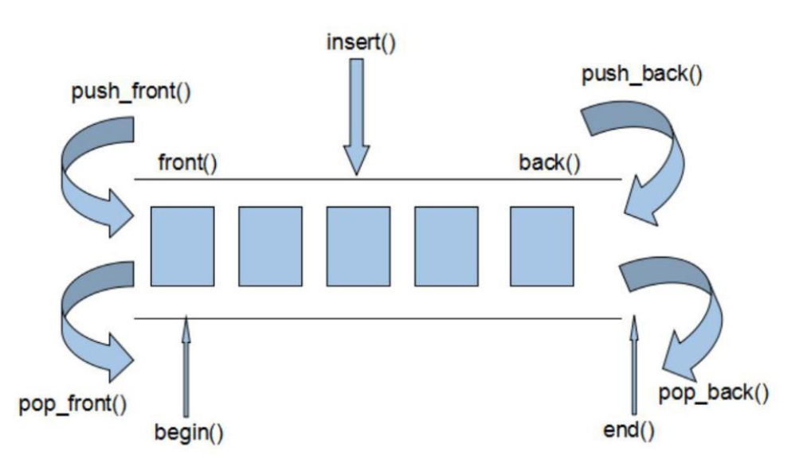
双端队列deque是一种双向开口的存储空间分段连续的数据结构，每段数据空间内部是连续的，而每段数据空间之间则不一定连续，如下图所示：
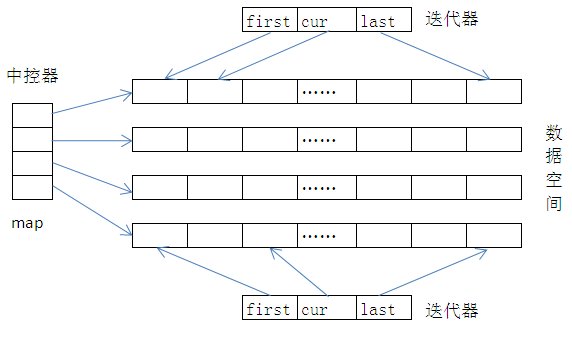
上图的deque有四段数据空间，这些空间都是程序运行过程中在堆上动态分配的。中控器（或叫map）保存着一组指针，每个指针指向一段数据空间的起始位置，通过中控器可以找到所有的数据空间。如果中控器的数据空间满了，会重新申请一块更大的空间，并将中控器的所有指针拷贝到新空间中。
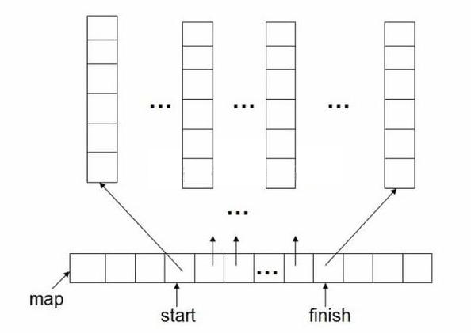
如上图所示，deque是由一段一段的定量连续空间构造。一旦有必要在deque的前端或尾端增加新空间，便配置一段连续空间，串接在整个deque的头部或尾部。
deque采用一块所谓的map（不是STL的map容器）作为主控，这里的map也是一块连续空间，其中每个元素为一个节点（也是deque的迭代器），指向另一段较大的连续线性空间，称为缓冲区，缓冲区才是deque的储存空间主体。
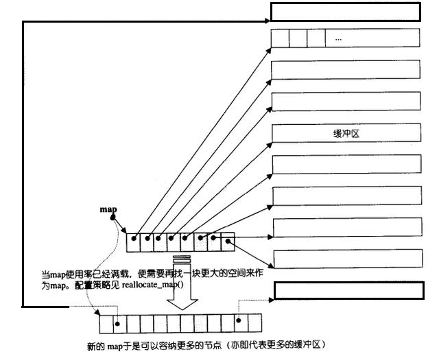
智能指针会造成内存泄漏吗
会的，比如循环引用场景，在多个shared_ptr形成循环引用，资源将无法释放。
std::shared_ptr：多个shared_ptr对象可以共享同一个资源的所有权，它们会维护一个引用计数。只有当引用计数为零时，才会释放资源。这种智能指针的内存管理是自动的，因此可以帮助我们避免显式地释放内存或出现内存泄漏的情况。例如：
std::shared_ptr<int> sharedPtr1 = std::make_shared<int>(10);
std::shared_ptr<int> sharedPtr2 = sharedPtr1;
sharedPtr1.reset(); // 不会导致内存泄漏，资源仍由sharedPtr2管理
sharedPtr2.reset(); // 资源被释放
在使用std::shared_ptr时，需要注意循环引用的情况。如果两个或多个shared_ptr对象相互引用，形成循环依赖，它们的引用计数永远不会达到零，资源将无法释放，从而导致内存泄漏。
针对这个问题，可以使用 weak_ptr 弱引用来解决这个问题。weak_ptr是用来监视shared_ptr的生命周期，它不管理shared_ptr内部的指针，它的拷贝的析构都不会影响引用计数，纯粹是作为一个旁观者监视shared_ptr中管理的资源是否存在，可以用来返回this指针和解决循环引用问题。
4. 深拷贝和浅拷贝的区别是什么？
- 浅拷贝是指只复制对象本身和其内部的值类型字段，但不会复制对象内部的引用类型字段。换句话说，浅拷贝只是创建一个新的对象，然后将原对象的字段值复制到新对象中，但如果原对象内部有引用类型的字段，只是将引用复制到新对象中，两个对象指向的是同一个引用对象。
- 深拷贝是指在复制对象的同时，将对象内部的所有引用类型字段的内容也复制一份，而不是共享引用。换句话说，深拷贝会递归复制对象内部所有引用类型的字段，生成一个全新的对象以及其内部的所有对象
12. 什么是响应式编程？
响应式编程是一款使用异步数据流编程的响应式编程思想，是基于观察者模型的这是大家的共识，它提供了非阻塞、异步的特性，便于处理异步情景，从而避免回调地狱和突破Future的局限性。
响应式编程 可以理解为：当某一主题发生改变时，观察此主题的观察者就会立刻收到通知并做出一系列响应。
可见，观察者模式的概念比较广，是“相应改变”，即只要变化了就行；而响应式编程必须得是“一系列响应”，也就是不但要变化，还要像雪崩一样的触发连锁式变化。
举个响应式编程的例子：在一个“数据监控系统”中，如果“数据”发生了改变，就会触发一系列的变化：数据改变 -> Dao层做出响应（数据访问层）-> Service层做出响应（业务逻辑层）-> Controller做出响应（控制器） -> Web页面做出相应（UI）。
13. 单例模式的应用场景是什么？
单例模式可以确保一个类只有一个实例，并提供一个全局访问点来获取这个实例。
比如，在应用程序里，日志记录器负责将程序运行过程中的信息记录下来，这些信息可能会被写入文件、数据库或者发送到远程服务器。为了保证日志信息的一致性和避免资源竞争，通常会使用单例模式。如果有多个日志记录器实例同时工作，可能会导致日志文件混乱或者数据丢失。
或者是，应用程序常常需要读取和管理配置文件，像数据库连接信息、系统参数等。使用单例模式创建配置文件管理器可以保证所有模块访问的是同一套配置信息，避免出现配置不一致的问题。
还有，创建和销毁数据库连接是非常耗费资源的操作，数据库连接池会预先创建一定数量的数据库连接，并进行管理。使用单例模式可以确保整个应用程序只使用一个连接池实例，避免重复创建连接池带来的资源浪费。
14. 什么是工厂模式？
工厂模式核心思想是将对象的创建和使用分离，把对象创建逻辑封装在一个工厂类中，这样在使用对象时，无需关心对象的具体创建过程，只需向工厂请求获取所需对象即可。
工厂模式的优势是让代码的可维护性和可扩展性更强，可以根据不同的需求创建不同类型的对象，当需要添加新的对象类型时，只需要修改或扩展工厂类，而不需要修改使用对象的代码。
工厂模式主要分为简单工厂模式、工厂方法模式和抽象工厂模式。
简单工厂模式
简单工厂模式是工厂模式的基础版本，它定义了一个工厂类，该类包含一个创建对象的方法，根据传入的参数来决定创建哪种类型的对象。
假设我们要创建不同类型的汽车（如轿车、SUV），可以使用简单工厂模式来实现。
// 汽车接口
interface Car {
void drive();
}
// 轿车类
class Sedan implements Car {
@Override
public void drive() {
System.out.println("Driving a sedan.");
}
}
// SUV 类
class SUV implements Car {
@Override
public void drive() {
System.out.println("Driving an SUV.");
}
}
// 汽车工厂类
class CarFactory {
public static Car createCar(String type) {
if ("sedan".equalsIgnoreCase(type)) {
returnnew Sedan();
} elseif ("suv".equalsIgnoreCase(type)) {
returnnew SUV();
}
returnnull;
}
}
// 测试代码
publicclass SimpleFactoryExample {
public static void main(String[] args) {
Car sedan = CarFactory.createCar("sedan");
sedan.drive();
Car suv = CarFactory.createCar("suv");
suv.drive();
}
}
在上述代码中，CarFactory 是工厂类，createCar 方法根据传入的参数创建不同类型的汽车对象。
工厂方法模式
工厂方法模式将对象的创建逻辑延迟到子类中实现，每个具体的子类负责创建特定类型的对象。它定义了一个抽象的工厂类，其中包含一个抽象的创建对象的方法，具体的创建逻辑由子类实现。
// 汽车接口
interface Car {
void drive();
}
// 轿车类
class Sedan implements Car {
@Override
public void drive() {
System.out.println("Driving a sedan.");
}
}
// SUV 类
class SUV implements Car {
@Override
public void drive() {
System.out.println("Driving an SUV.");
}
}
// 抽象工厂类
abstractclass CarFactory {
public abstract Car createCar();
}
// 轿车工厂类
class SedanFactory extends CarFactory {
@Override
public Car createCar() {
returnnew Sedan();
}
}
// SUV 工厂类
class SUVFactory extends CarFactory {
@Override
public Car createCar() {
returnnew SUV();
}
}
// 测试代码
publicclass FactoryMethodExample {
public static void main(String[] args) {
CarFactory sedanFactory = new SedanFactory();
Car sedan = sedanFactory.createCar();
sedan.drive();
CarFactory suvFactory = new SUVFactory();
Car suv = suvFactory.createCar();
suv.drive();
}
}
在这个例子中，CarFactory 是抽象工厂类，SedanFactory 和 SUVFactory 是具体的工厂子类，分别负责创建轿车和 SUV 对象。
抽奖工厂
抽象工厂模式提供了一个创建一系列相关或相互依赖对象的接口，而无需指定它们具体的类。它允许客户端使用抽象的接口来创建一组相关的对象，而不需要关心这些对象的具体实现。
假设我们要创建不同品牌（如宝马、奔驰）的汽车和轮胎，每个品牌的汽车和轮胎是相互关联的。
// 汽车接口
interface Car {
void drive();
}
// 轮胎接口
interface Tire {
void roll();
}
// 宝马汽车类
class BMWCar implements Car {
@Override
public void drive() {
System.out.println("Driving a BMW car.");
}
}
// 宝马轮胎类
class BMWTire implements Tire {
@Override
public void roll() {
System.out.println("BMW tire is rolling.");
}
}
// 奔驰汽车类
class BenzCar implements Car {
@Override
public void drive() {
System.out.println("Driving a Benz car.");
}
}
// 奔驰轮胎类
class BenzTire implements Tire {
@Override
public void roll() {
System.out.println("Benz tire is rolling.");
}
}
// 抽象工厂接口
interface CarFactory {
Car createCar();
Tire createTire();
}
// 宝马工厂类
class BMWFactory implements CarFactory {
@Override
public Car createCar() {
returnnew BMWCar();
}
@Override
public Tire createTire() {
returnnew BMWTire();
}
}
// 奔驰工厂类
class BenzFactory implements CarFactory {
@Override
public Car createCar() {
returnnew BenzCar();
}
@Override
public Tire createTire() {
returnnew BenzTire();
}
}
// 测试代码
publicclass AbstractFactoryExample {
public static void main(String[] args) {
CarFactory bmwFactory = new BMWFactory();
Car bmwCar = bmwFactory.createCar();
Tire bmwTire = bmwFactory.createTire();
bmwCar.drive();
bmwTire.roll();
CarFactory benzFactory = new BenzFactory();
Car benzCar = benzFactory.createCar();
Tire benzTire = benzFactory.createTire();
benzCar.drive();
benzTire.roll();
}
}
在这个示例中，CarFactory 是抽象工厂接口，BMWFactory 和 BenzFactory 是具体的工厂类，分别负责创建宝马和奔驰的汽车和轮胎对象。
C++11 新特性了解哪些内容？
类型推导与简化语法
| 特性名称 | 描述 | 示例 |
|---|---|---|
auto
关键字
|
自动推导变量类型，简化复杂类型声明（如迭代器）。 | auto x = 42;
→ int x
|
decltype |
推导表达式类型，保留 const 和引用属性，适用于模板编程。
|
int i=1; decltype(i) j = i;
→ int j
|
右值引用与移动语义
右值引用（&&）
|
区分左值/右值，支持资源高效转移（如临时对象）。 | std::vector<int> v2 = std::move(v1); |
|---|---|---|
| 移动构造函数/赋值运算符 | 减少深拷贝开销，通过资源转移提升性能。 |
类中定义 ClassName(ClassName&& other) noexcept;
|
完美转发（std::forward）
|
保持参数原始类型，避免多次拷贝。 |
模板中使用 std::forward<T>(arg)
|
智能指针
std::unique_ptr |
独占所有权，不可复制但可移动，替代 auto_ptr。
|
std::unique_ptr<int> ptr = std::make_unique<int>(10); |
|---|---|---|
std::shared_ptr |
共享所有权，引用计数管理资源，线程安全。 | std::shared_ptr<int> ptr = std::make_shared<int>(10); |
std::weak_ptr |
解决 shared_ptr 循环引用问题。
|
std::weak_ptr<int> w_ptr = s_ptr; |
函数与模板增强
| Lambda 表达式 | 匿名函数，支持捕获外部变量，简化回调和算法。 | std::sort(vec.begin(), vec.end(), [](int a, int b) { return a < b; }); |
|---|---|---|
| 变长参数模板 | 支持任意数量/类型的模板参数，用于元编程和容器设计。 | template<typename... Args> void func(Args... args); |
constexpr
常量表达式
|
编译时求值，优化性能，允许函数在编译期执行。 | constexpr int factorial(int n) { return n <=1 ? 1 : n*factorial(n-1); } |
并发编程支持
std::thread |
原生多线程支持，结合互斥锁和原子操作实现同步。 | std::thread t(func); t.join(); |
|---|---|---|
std::async
和 std::future
|
简化异步任务管理，获取异步操作结果。 | auto future = std::async(func); int result = future.get(); |
智能指针介绍一下？
- std::shared_ptr：是一种引用计数智能指针，允许多个shared_ptr对象共享同一个对象，并通过引用计数来管理内存的释放，当最后一个shared_ptr指向对象析构时，会释放对象所占用的内存。不适合处理循环引用的情况，可能导致内存泄漏。
- std::unique_ptr：是一种独占式智能指针，确保只有一个指针可以指向一个对象，不能进行复制，但可以移动它的所有权。
- std::weak_ptr：是用于解决std::shared_ptr可能导致的循环引用问题的智能指针。它允许引用shared_ptr所管理的对象，但不会增加引用计数，不会影响对象的生命周期，避免循环引用导致的内存泄漏。
shared_ptr的作用是什么？
在传统的 C++ 编程中，使用 new 操作符分配的内存需要手动使用 delete 操作符释放，若忘记释放或者在异常情况下无法执行 delete 操作，就会造成内存泄漏。
std::shared_ptr 可以自动处理内存的释放，当不再有 std::shared_ptr 指向该对象时，对象的内存会被自动释放。
std::shared_ptr 支持多个 std::shared_ptr 实例共享同一个对象的所有权。它通过引用计数机制来实现这一点，每个 std::shared_ptr 都会维护一个引用计数，记录有多少个 std::shared_ptr 共享同一个对象。当引用计数变为 0 时，对象的内存会被释放。
#include <iostream>
#include <memory>
class MyClass {
public:
MyClass() { std::cout << "MyClass constructor" << std::endl; }
~MyClass() { std::cout << "MyClass destructor" << std::endl; }
};
int main() {
std::shared_ptr<MyClass> ptr1 = std::make_shared<MyClass>();
std::shared_ptr<MyClass> ptr2 = ptr1; // 共享所有权
std::cout << "Use count: " << ptr1.use_count() << std::endl; // 输出 2
ptr2.reset(); // 释放 ptr2 的所有权
std::cout << "Use count: " << ptr1.use_count() << std::endl; // 输出 1
// 当 ptr1 离开作用域时，MyClass 对象的内存会被释放
return0;
}
在这个例子中，ptr1 和 ptr2 共享同一个 MyClass 对象的所有权，引用计数变为 2。当调用 ptr2.reset() 时，ptr2 释放了对对象的所有权，引用计数减为 1。当 ptr1 离开作用域时，引用计数变为 0，对象的内存被释放。
weak_ptr的作用是什么？如何和shared_ptr结合使用？
std::weak_ptr 主要用于辅助 std::shared_ptr 进行内存管理，解决 std::shared_ptr 可能存在的循环引用问题，同时还可以用于观察 std::shared_ptr 所管理对象的生命周期。
当两个或多个 std::shared_ptr 相互引用形成循环时，会导致引用计数永远不会降为 0，从而造成内存泄漏。std::weak_ptr 不会增加所指向对象的引用计数，因此可以打破这种循环引用。
#include <iostream>
#include <memory>
class B;
class A {
public:
std::shared_ptr<B> b_ptr;
~A() { std::cout << "A destructor" << std::endl; }
};
class B {
public:
std::weak_ptr<A> a_ptr; // 使用 std::weak_ptr 打破循环引用
~B() { std::cout << "B destructor" << std::endl; }
};
int main() {
std::shared_ptr<A> a = std::make_shared<A>();
std::shared_ptr<B> b = std::make_shared<B>();
a->b_ptr = b;
b->a_ptr = a;
return0;
}
在上述代码中，如果 B 类中的 a_ptr 也使用 std::shared_ptr，就会形成循环引用，导致 A 和 B 对象的内存无法释放。使用 std::weak_ptr 后，b->a_ptr 不会增加 A 对象的引用计数，当 main 函数结束时，a 和 b 的引用计数降为 0，A 和 B 对象的内存会被正确释放。
另外，std::weak_ptr 可以用于观察 std::shared_ptr 所管理对象的生命周期。通过 std::weak_ptr 的 expired() 方法可以检查所指向的对象是否已经被释放。
#include <iostream>
#include <memory>
int main() {
std::shared_ptr<int> shared = std::make_shared<int>(42);
std::weak_ptr<int> weak = shared;
if (!weak.expired()) {
std::cout << "Object is still alive." << std::endl;
}
shared.reset();
if (weak.expired()) {
std::cout << "Object has been destroyed." << std::endl;
}
return0;
}
在这个例子中，weak 观察 shared 所管理的对象。当 shared 释放对象后，weak.expired() 返回 true，表示对象已经被销毁。
lambda表达式的原理是什么？
从本质上讲，Lambda 表达式是编译器自动生成的一个匿名的函数对象（也称为仿函数）。当我们编写一个 Lambda 表达式时，编译器会创建一个未命名的类，这个类重载了函数调用运算符 operator()。
#include <iostream>
int main() {
auto lambda = [](int a, int b) { return a + b; };
int result = lambda(3, 4);
std::cout << "Result: " << result << std::endl;
return 0;
}
编译器会将上述 Lambda 表达式转换为类似下面的代码：
#include <iostream>
// 编译器生成的未命名类
class __lambda_4_13 {
public:
__lambda_4_13() = default;
inline int operator()(int a, int b) const {
return a + b;
}
};
int main() {
__lambda_4_13 lambda;
int result = lambda(3, 4);
std::cout << "Result: " << result << std::endl;
return0;
}
stl迭代器的失效情况你知道哪些？
序列式容器（
vector、deque），迭代器失效的情况
当在 vector 中插入元素时，如果插入操作导致容器的内存重新分配（即插入后容器的容量不足，需要重新分配更大的内存空间），那么所有指向 vector 的迭代器、指针和引用都会失效。因为重新分配内存后，元素会被移动到新的内存位置，例子代码：
#include <iostream>
#include <vector>
int main() {
std::vector<int> vec = {1, 2, 3};
auto it = vec.begin();
vec.push_back(4); // 可能导致内存重新分配
// 此时 it 可能已经失效
// std::cout << *it << std::endl; // 未定义行为
return 0;
}
当在 vector 中删除元素时，指向被删除元素的迭代器、指针和引用会失效，并且指向删除位置之后的元素的迭代器、指针和引用也会失效。代码如下：
#include <iostream>
#include <vector>
int main() {
std::vector<int> vec = {1, 2, 3};
auto it = vec.begin() + 1;
vec.erase(vec.begin()); // 删除第一个元素
// 此时 it 失效
// std::cout << *it << std::endl; // 未定义行为
return 0;
}
在 deque 的中间插入元素时，所有迭代器、指针和引用都会失效，还有在 deque 的头部或尾部插入元素时，指向元素的迭代器、指针和引用不会失效，但如果插入操作导致内存重新分配，那么迭代器可能会失效。
#include <iostream>
#include <deque>
int main() {
std::deque<int> deq = {1, 2, 3};
auto it = deq.begin() + 1;
deq.insert(deq.begin() + 1, 4); // 在中间插入元素
// 此时 it 失效
// std::cout << *it << std::endl; // 未定义行为
return 0;
}
删除 deque 中间的元素时，所有迭代器、指针和引用都会失效，还有删除 deque 头部或尾部的元素时，指向被删除元素的迭代器、指针和引用会失效。
#include <iostream>
#include <deque>
int main() {
std::deque<int> deq = {1, 2, 3};
auto it = deq.begin() + 1;
deq.erase(deq.begin() + 1); // 删除中间元素
// 此时 it 失效
// std::cout << *it << std::endl; // 未定义行为
return 0;
}
关联式容器（
set、map），迭代器失效的情况
set 在插入元素不会使任何迭代器、指针和引用失效，因为关联式容器使用红黑树等平衡二叉搜索树实现，插入操作只是在树中添加新节点，不会影响其他节点的内存位置。
不过指向被删除元素的迭代器、指针和引用会失效，其他迭代器、指针和引用不会失效。
#include <iostream>
#include <set>
int main() {
std::set<int> s = {1, 2, 3};
auto it = s.begin();
auto it_to_delete = s.find(2);
s.erase(it_to_delete);
// 此时 it_to_delete 失效
// std::cout << *it_to_delete << std::endl; // 未定义行为
std::cout << *it << std::endl; // 正常输出
return 0;
}
map 在插入元素不会使任何迭代器、指针和引用失效，原因与 set 。但是指向被删除元素的迭代器、指针和引用会失效，其他迭代器、指针和引用不会失效。
#include <iostream>
#include <map>
int main() {
std::map<int, int> m = {#{ 1, 10}, {2, 20}, {3, 30}#};
auto it = m.begin();
auto it_to_delete = m.find(2);
m.erase(it_to_delete);
// 此时 it_to_delete 失效
// std::cout << it_to_delete->second << std::endl; // 未定义行为
std::cout << it->second << std::endl; // 正常输出
return 0;
}
链表式容器（
list），迭代器失效
在 list 插入元素不会使任何迭代器、指针和引用失效，因为链表的插入操作只是修改节点的指针，不会影响其他节点的内存位置。但是，指向被删除元素的迭代器、指针和引用会失效，其他迭代器、指针和引用不会失效。
#include <iostream>
#include <list>
int main() {
std::list<int> lst = {1, 2, 3};
auto it = lst.begin();
auto it_to_delete = ++lst.begin();
lst.erase(it_to_delete);
// 此时 it_to_delete 失效
// std::cout << *it_to_delete << std::endl; // 未定义行为
std::cout << *it << std::endl; // 正常输出
return 0;
}
unordered_map的底层结构是什么？
底层结构基于哈希表实现。
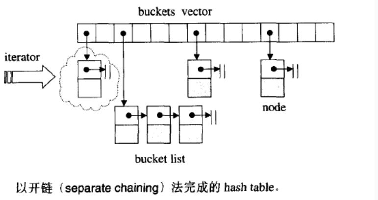
std::unordered_map 内部维护了一个哈希桶数组，数组中的每个元素称为一个哈希桶。每个哈希桶可以存储一个或多个键值对。当多个键通过哈希函数计算得到相同的索引时，就会发生哈希冲突。
std::unordered_map 通常使用链地址法来解决哈希冲突。在链地址法中，每个哈希桶是一个链表，当发生哈希冲突时，新的键值对会被插入到对应的链表或容器中。
对new和malloc的理解
new和malloc都是动态内存分配函数。其中，new是C++中的操作符，malloc是C语言中的函数。new会调用对象的构造函数，而malloc不会。使用new可以简化代码，并且更加类型安全。
补充：
new和malloc区别：
- 分配内存的位置：malloc是从堆上动态分配内存，new是从自由存储区为对象动态分配内存。自由存储区的位置取决于operator new的实现。自由存储区不仅可以为堆，还可以是静态存储区，这都看operator new在哪里为对象分配内存。
- 返回类型安全性：malloc内存分配成功后返回void*，然后再强制类型转换为需要的类型；new操作符分配内存成功后返回与对象类型相匹配的指针类型；因此new是符合类型安全的操作符。
- 内存分配失败返回值：malloc内存分配失败后返回NULL。new分配内存失败则会抛异常（bac_alloc）。
- 分配内存的大小的计算：使用new操作符申请内存分配时无须指定内存块的大小，编译器会根据类型信息自行计算，而malloc则需要显式地指出所需内存的尺寸。
- 是否可以被重载：opeartor new /operator delete可以被重载。而malloc/free则不能重载。
new是在内存上哪一块去分配的内存
堆
补充：
new所申请的内存区域在C++中称为自由存储区。很多编译器的new/delete都是以malloc/free为基础来实现的，所以通常都是借由堆实现来实现自由存储，这时候就可以说new所申请的内存区域在堆上。
如果new内存失败了会是怎么样？
会抛出std::bad_alloc异常。
补充：
如果加上std::nothrow关键字，A* p = new (std::nothrow) A;，new 就不会抛出异常而是会返回空指针。
析构函数为什么通常是会做成一个虚函数呢
如果一个类有虚函数，就应该为其定义一个虚析构函数。这是因为在使用delete操作符释放一个指向派生类对象的基类指针时，如果基类的析构函数不是虚函数，那么只会调用基类的析构函数，而不会调用派生类的析构函数，这样就会导致内存泄漏和未定义行为的问题。通过将析构函数定义为虚函数，可以确保在释放派生类对象时，先调用派生类的析构函数，再调用基类的析构函数，从而避免内存泄漏和未定义行为的问题。
线程和进程有什么区别
进程是程序在操作系统中的一次执行过程，它拥有独立的地址空间和系统资源。线程是进程中的一个执行单元，同一进程内的多个线程共享相同的地址空间和系统资源。
补充：
- 进程是资源调度的基本单位，运行一个可执行程序会创建一个或多个进程，进程就是运行起来的可执行程序；线程是程序执行的基本单位，每个进程中都有唯一的主线程，且只能有一个，主线程和进程是相互依存的关系，主线程结束进程也会结束。
- 每个进程有自己的独立地址空间，不与其他进程分享；一个进程里可以有多个线程，彼此共享同一个地址空间。堆内存、文件、套接字等资源都归进程管理，同一个进程里的多个线程可以共享使用。每个进程占用的内存和其他资源，会在进程退出或被杀死时返回给操作系统。
- 并发应用开发可以用多进程或多线程的方式。多线程由于可以共享资源，效率较高；反之，多进程（默认）不共享地址空间和资源，开发较为麻烦，在需要共享数据时效率也较低。但多进程安全性较好，在某一个进程出问题时，其他进程一般不受影响；而在多线程的情况下，一个线程执行了非法操作会导致整个进程退出。
右值引用有什么作用
没用过
补充：
-
右值引用是C++11引入的特性，它是指对右值进行引用的一种方式。右值引用的作用主要有两个：
-
可以通过右值引用来实现移动语义。移动语义可以在不进行深拷贝的情况下，将对象的资源所有权从一个对象转移到另一个对象，从而提高代码的效率。
-
右值引用还可以用于完美转发。在函数模板中，通过使用右值引用类型的形参来接收参数，可以实现完美转发，即保持原参数的值类别（左值还是右值），将参数传递给另一个函数。
智能指针
智能指针是C++中的一种特殊指针，它是一个对象，用来管理另一个指针所指向的对象的生命周期。智能指针可以自动地分配和释放内存，避免手动管理内存的麻烦和出错风险。
C++标准库提供了三种智能指针：
- shared_ptr：多个智能指针可以共享同一个对象，当最后一个指针被销毁时，它会释放对象的内存。
- unique_ptr：独占式智能指针，不能共享同一个对象，当智能指针被销毁时，它会释放对象的内存。
- weak_ptr：弱引用智能指针，不会增加对象的引用计数，用于避免shared_ptr循环引用时的内存泄漏问题。
在哪些场景下会应用智能指针
我自己是在在动态内存管理中，使用智能指针可以避免手动管理内存的麻烦和出错风险。
如果遇到内存泄漏这种问题，你一般是怎么去解决
打断点定位然后做处理
后来思考对方应该是想让我回答这种处理措施⬇️
- 在程序中加入必要的错误处理代码，避免程序因为异常情况而导致内存泄漏。
- 使用智能指针等RAII机制，自动管理内存，避免手动管理内存的麻烦和出错风险。
- 使用内存分析工具，检测程序中的内存泄漏，并进行相应的修复。
class中缺省的函数
没关注
补充：
在C++中，如果一个类没有显式地定义「构造函数、析构函数、拷贝构造函数、赋值运算符重载函数」，那么编译器会自动生成这些函数，这些函数被称为缺省函数。
四、C++ 空类的大小？一个只包含int 变量的空class和只包含int变量的空struct的内存各占多大？
关键词：空类和空结构体都大小为1，这样可以确保两个不同的对象，拥有不同的地址。
1.空类
class A {};
int main(){
cout<<sizeof(A)<<endl;// 输出 1;
A a;
cout<<sizeof(a)<<endl;// 输出 1;
return 0;
}
- C++空类的大小不为0，不同编译器设置不一样，vs和lg++都是设置为1；
- C++标准指出，不允许一个对象（当然包括类对象）的大小为0，不同的对象不能具有相同的地址；
- 带有虚函数的C++类大小不为1，因为每一个对象会有一个vptr指向虚函数表，具体大小根据指针大小确定；
- C++中要求对于类的每个实例都必须有独一无二的地址,那么编译器自动为空类分配一个字节大小，这样便保证了每个实例均有独一无二的内存地址。
在C++中空类会占一个字节，这是为了让对象的实例能够相互区别。具体来说，空类同样可以被实例化，并且每个实例在内存中都有独一无二的地址，因此，编译器会给空类隐含加上一个字节，这样空类实例化之后就会拥有独一无二的内存地址。当该空白类作为基类时，该类的大小就优化为0了，子类的大小就是子类本身的大小。这就是所谓的空白基类最优化。
空类的实例大小就是类的大小，所以sizeof(a)=1字节**,如果a是指针，则sizeof(a)就是指针的大小，即4字节。**
2.含有虚函数的类的大小
class A { virtual Fun(){} };
int main(){
cout<<sizeof(A)<<endl;// 输出 4(32位机器)/8(64位机器);
A a;
cout<<sizeof(a)<<endl;// 输出 4(32位机器)/8(64位机器);
return 0;
}
因为有虚函数的类对象中都有一个虚函数表指针 __vptr，其大小是4字节
3.只含有一个int成员变量的类的大小（4）
class A { int a; };
int main(){
cout<<sizeof(A)<<endl;// 输出 4;
A a;
cout<<sizeof(a)<<endl;// 输出 4;
return 0;
}
只是一个int变量的大小——4字节
4.只含有一个静态成员变量的类的大小（1）
class A { static int a; };
int main(){
cout<<sizeof(A)<<endl;// 输出 1;
A a;
cout<<sizeof(a)<<endl;// 输出 1;
return 0;
}
静态成员存放在静态存储区，不占用类的大小, 普通函数也不占用类大小
class A { static int a; int b; };;
int main(){
cout<<sizeof(A)<<endl;// 输出 4;
A a;
cout<<sizeof(a)<<endl;// 输出 4;
return 0;
}
静态成员a不占用类的大小，所以类的大小就是b变量的大小 即4个字节
五、为什么一般构造函数定义为虚函数？析构函数不定义为虚函数？
为什么析构函数一般写为虚函数？
如果析构函数不被声明成虚函数，则编译器实施静态绑定，在删除基类指针时，只会调用基类的析构函数而不调用派生类析构函数，这样就会造成派生类对象析构不完全，造成内存泄漏。
所以在实现多态时，当用基类操作派生类，在析构时防止只析构基类而不析构派生类的状况发生，要将基类的析构函数声明为虚函数。
为什么构造函数不写为虚函数？
从存储空间角度：虚函数对应一个vtable，可是这个vtable其实是存储在对象的内存空间的。问题出来了，如果构造函数是虚的，就需要通过 vtable来调用，可是对象还没有实例化，也就是内存空间还没有，无法找到vtable，所以构造函数不能是虚函数。
从使用角度：虚函数的作用在于通过父类的指针或者引用来调用它的时候能够变成调用子类的那个成员函数。而构造函数是在创建对象时自动调用的，不可能通过父类的指针或者引用去调用，因此也就规定构造函数不能是虚函数。
六、static的作用（作用域限制）
static
- 不考虑类的情况
- 有时候希望某些全局变量或者函数只在本文件中被使用，而不能被其他外部文件引用，这个时候可以在全局变量前加一个static说明，这样不同的人编写不同的变量或者函数时不用担心重名的问题，即使重名了也互不干扰
- 默认初始化为0，包括未初始化的全局静态变量与局部静态变量，都存在全局未初始化区
- 静态变量在函数内定义，始终存在，且只进行一次初始化，具有记忆性，其作用范围与局部变量相同，函数退出后仍然存在，但不能使用
- 考虑类的情况
- static成员变量：只与类关联，不与类的对象关联。定义时要分配空间，不能在类声明中初始化，必须在类定义体外部初始化，初始化时不需要标示为static；可以被非static成员函数任意访问。
- static成员函数：不具有this指针，无法访问类对象的非static成员变量和非static成员函数；不能被声明为const、虚函数和volatile；可以被非static成员函数任意访问
静态局部变量：
- 静态局部变量属于静态存储类别，在静态存储区内分配存储单元，在整个程序运行期间始终存在。
- 静态局部变量只初始化一次，并且之后再次调用函数时不再重新分配空间和赋初值，而保留上次函数调用结束时的值（而普通局部变量每调用一次就会重新分配空间并赋一次初值）
- 静态局部变量默认初始化为0
- 函数调用结束之后静态局部变量依然存在，但是只能在该函数内进行使用该静态局部变量，
extern的作用（作用域扩展）
- 将全局变量的作用域扩展到其定义之前：如果全局变量不在文件的开头定义，其作用范围只限定于从定义处到文件结尾，如果在定义点之前的函数想引用该变量，就应该在引用之前使用extern关键字对该变量进行声明，之后该全局变量的作用域就从声明处一直到文件结尾了
- 将某一个源文件中全局变量的作用域扩展到其他源文件中：一个C++项目很多情况是由多个源文件构成，如果在一个文件中想引用另一个文件中已定义的全局变量，比如现在两个文件都要使用到同一个全局变量int a，正确的做法应该是：在一个文件中定义变量a，而在另一个文件中使用extern int a；对该变量进行声明，这样就可以两个文件同时使用同一个变量了
const
- 不考虑类的情况
- const常量在定义时必须初始化，之后无法更改
- const形参可以接收const和非const类型的实参，例如// i 可以是 int 型或者 const int 型void fun(const int& i){ //...}
- 考虑类的情况
- const成员变量：不能在类定义外部初始化，只能通过构造函数初始化列表进行初始化，并且必须有构造函数；不同类对其const数据成员的值可以不同，所以不能在类中声明时初始化。
- const成员函数：const对象不可以调用非const成员函数；非const对象都可以调用；不可以改变非mutable（用该关键字声明的变量可以在const成员函数中被修改）数据的值。
七、C++ sort()函数实现
sort()源码中采用的是一种叫做IntroSort内省式排序的混合式排序算法，
1.首先进行判断排序的元素个数是否大于stl_threshold，stl_threshold是一个常量值是16，意思就是说我传入的元素规模小于我们的16的时候直接采用插入排序。（为什么用插入排序？因为插入排序在面对“几近排序”的序列时，表现更好，而快排是通过递归实现的，会为了极小的子序列产生很多的递归调用在区间长度小的时候经常不如插入排序效率高）
2.如果说我们的元素规模大于16，那就需要去判断如果是不是能采用快速排序，怎么判断呢？快排是使用递归来实现的，如果说我们进行判断我们的递归深度有没有到达递归深度的限制阈值2*lg（n），如果递归深度没达到阈值就使用快速排序来进行排序
3.如果说大于我们的最深递归深度阈值的话，这个时候说明快排复杂度退化了（比如很不巧基准元素多次选取到了当前区间中最小或最大的元素。这种情况下，每次划分只能将区间缩小1个元素，造成递归深度过深），就会采用我们的堆排序，堆排序是可以保证稳定O(nlogn)的时间复杂度的。
说说观察者模式的结构。
观察者模式通常由以下几个角色组成：
- Subject（主题）：也称为被观察者或可观察对象，它维护一系列观察者对象，并提供添加、删除和通知观察者的接口。
- Observer（观察者）：观察主题的对象，当主题状态发生变化时会接收到通知，并执行相应的更新操作。
- ConcreteSubject（具体主题）：具体的主题实现，维护主题状态，当状态发生改变时通知所有观察者。
- ConcreteObserver（具体观察者）：具体的观察者实现，实现更新接口，以便在接收到通知时执行更新操作。
具体的细节展开：
- 主题（Subject）：主题是被观察的对象，它维护一组观察者，并提供注册和注销观察者的方法。主题的状态发生变化时，会通知所有注册的观察者。接口示例：
public interface Subject {
void registerObserver(Observer observer);
void removeObserver(Observer observer);
void notifyObservers();
}
- 观察者（Observer）：观察者是需要对主题状态变化做出反应的对象。每个观察者必须实现一个更新方法，以便接收来自主题的通知。接口示例：
public interface Observer {
void update();
}
- 具体主题（Concrete Subject）：具体主题是实现了主题接口的类，维护观察者的状态，并在其状态变化时通知所有的观察者。示例：
public class ConcreteSubject implements Subject {
private List<Observer> observers = new ArrayList<>();
private int state;
public void registerObserver(Observer observer) {
observers.add(observer);
}
public void removeObserver(Observer observer) {
observers.remove(observer);
}
public void notifyObservers() {
for (Observer observer : observers) {
observer.update(); // 通知所有观察者
}
}
public void setState(int state) {
this.state = state;
notifyObservers(); // 状态改变，通知观察者
}
public int getState() {
return state;
}
}
- 具体观察者（Concrete Observer）：具体观察者类实现观察者接口，并定义如何响应主题的通知。示例：
public class ConcreteObserver implements Observer {
private String name;
public ConcreteObserver(String name) {
this.name = name;
}
@Override
public void update() {
System.out.println(name + " received update!");
}
}
典型工作流程：
-
注册观察者：观察者通过调用主题的
registerObserver方法注册到主题中。 -
状态改变：当具体主题的状态发生变化时，它调用
notifyObservers方法。 -
通知观察者：主题遍历所有注册的观察者并调用它们的
update方法。 - 更新状态：观察者根据主题发送的通知更新自身状态。
说说你了解的C++11相关特性
- 自动类型推断（auto）：引入了auto关键字，可以根据变量初始化表达式的类型自动推断变量的类型，使得代码更具灵活性和可读性。
- 范围for循环：通过for (element : container)语法，允许直接遍历容器中的每个元素，简化了迭代操作，减少了代码量。
- 移动语义和右值引用：通过引入右值引用（&&）和移动构造函数，减少了资源管理时的不必要拷贝操作，提高了性能。
- 智能指针：std::shared_ptr和std::unique_ptr等智能指针类的引入，帮助管理动态分配的内存，避免内存泄漏和悬挂指针等问题。
- Lambda表达式：引入了匿名函数的Lambda表达式语法，能够更方便地定义和使用函数对象，减少了冗余代码。
- nullptr空指针：引入了nullptr关键字，用于表示空指针，替代了传统的NULL，避免了空指针常量与整数间的模糊问题。
- 初始化列表：通过使用花括号{}来对对象初始化，统一了初始化语法，提供了更安全、简洁的初始化方式。
- 默认和删除成员函数：引入了=default和=delete来指明默认构造函数、拷贝构造函数等的生成和禁止。
- 强类型枚举：引入了枚举类（enum class），解决了传统枚举类型带来的全局命名空间和类型安全问题。
- 多线程支持：引入了std::thread、std::mutex等多线程支持库，使得并发编程更加方便和安全。
- 泛型编程优化：引入了constexpr关键字，允许在编译时计算表达式，提高了程序的性能。
介绍移动语义
移动语义通过右值引用（Rvalue References）和移动构造函数（Move Constructors）来优化对象在内存中的传递和处理，避免不必要的数据复制。
传统的拷贝操作对于大型对象或资源密集型对象来说可能会有很高的开销，因为它们需要将对象的所有数据复制到新的对象中。移动语义的引入解决了这一问题，实现了对象资源的“移动”而非“复制”。
- 右值引用（Rvalue References）：通过使用双引号&&声明右值引用，可以绑定到临时对象或右值，即那些将会被销毁的临时对象。右值引用允许我们对其资源进行移动操作而不是复制操作。
T&& t = T(); // t为右值引用
- 移动构造函数（Move Constructor）：移动构造函数是专门用于将对象资源从一个右值引用对象“移动”到另一个对象的构造函数。它通过将资源所有权从一个对象转移到另一个对象来避免不必要的数据复制，从而提高程序性能。
// 移动构造函数示例
T(T&& other) {
// 将other对象的资源移动到当前对象
}
- 标记对象为右值（std::move）：使用std::move函数可以将一个对象标记为右值，以便可以调用移动构造函数而不是拷贝构造函数。
T obj1;
T obj2 = std::move(obj1); // 将obj1标记为右值，调用移动构造函数
移动语义的应用可以在涉及对象所有权转移的情况下提高性能，特别是在动态内存管理和容器元素移动时。通过避免不必要的复制操作，移动语义使得代码更加高效和可维护，同时减少了资源的浪费。
介绍智能指针
- std::shared_ptr：是一种引用计数智能指针，允许多个shared_ptr对象共享同一个对象，并通过引用计数来管理内存的释放，当最后一个shared_ptr指向对象析构时，会释放对象所占用的内存。不适合处理循环引用的情况，可能导致内存泄漏。
- std::unique_ptr：是一种独占式智能指针，确保只有一个指针可以指向一个对象，不能进行复制，但可以移动它的所有权。
- std::weak_ptr：是用于解决std::shared_ptr可能导致的循环引用问题的智能指针。它允许引用shared_ptr所管理的对象，但不会增加引用计数，不会影响对象的生命周期，避免循环引用导致的内存泄漏。
容器可以一边遍历一边插入吗？
当处理vector,string,deque时，当在一个循环中可能增加或移除元素时，要考虑到迭代器可能会失效的问题。vector插入的时候：
- 当插入(push_back)一个元素后，end操作返回的迭代器肯定失效；
- 当插入(push_back)一个元素后，如果vector的capacity发生了改变，则需要重新加载整个容器，此时first和end操作返回的迭代器都会失效；
list插入的时候：
- 插入操作(insert)和接合操作(splice)不会造成原有的list迭代器失效，
deque插入的时候：
- 在deque容器首部或者尾部插入元素，不会使得任何迭代器失效；
- 在deque容器的任何其他位置进行插入或删除操作都将使指向该容器元素的所有迭代器失效；
set和map插入的时候：
- 与list相同，当对其进行insert或者erase操作时，操作之前的所有迭代器，在操作完成之后都依然有效，但被删除元素的迭代器失效。
使用迭代器怎么删除一个元素？
顺序容器（序列式容器，比如vector、deque）删除元素的方式：erase迭代器不仅使所指向被删除的迭代器失效，而且使被删元素之后的所有迭代器失效(list除外)，所以不能使用erase(it++)的方式，但是erase的返回值是下一个有效迭代器：It = c.erase(it);
std::vector<int> arrayInt;
...
std::vector<int>::iterator it = arrayInt.begin();
while (it != arrayInt.end())
{
if (...)
{
// 需要注意的是，因为顺序式容器会使本身和后面的元素迭代器都失效，所以不能简单的++操作
// 顺序式容器的erase()会返回紧随被删除元素的下一个元素的有效迭代器（节点式容器的erase()的返回值是void）
it = arrayInt.erase(it);
}
else
{
it++;
}
}
关联容器(关联式容器，比如map、set、multimap、multiset等) 删除元素的方式：erase迭代器只是被删除元素的迭代器失效，但是返回值是void，所以要采用erase(it++)的方式删除迭代器；c.erase(it++)
std::map<int, struct> mapInfo;
...
std::map<int, struct>::iterator it = mapInfo.begin();
while (it != mapInfo.end())
{
if (...)
{
// 删除节点的前，对迭代器进行后移的操作，因为其他元素不会失效
mapInfo.erase(it++);
}
else
{
it++;
}
}
C++的多态是什么？怎么通过虚函数实现？
C++中的多态性是指的是同一个操作作用于不同的对象时，可以产生不同的行为。多态性主要通过虚函数实现，能够让你以父类的指针或引用调用子类的实现，从而在运行时决定使用哪个函数。
C++中的多态通常分为两种主要类型：
- 编译时多态（静态多态）：通过函数重载和运算符重载实现，在编译时确定调用哪个函数。
- 运行时多态（动态多态）：通过虚函数实现，在运行时根据对象的实际类型决定调用的函数。实现原理是，每个包含虚函数的类都有一个虚函数表，这个表记录了该类对象可以调用的虚函数指针，每个对象也有一个隐式的虚函数指针，指向其类的虚函数表。在运行时，调用虚函数时，程序通过虚函数指针查找正确的函数。
虚函数是通过在基类中声明一个函数为virtual来实现的。这标志着这个函数可以被派生类重写（override）。当通过基类指针或引用调用虚函数时，C++会查找实际对象的类型，调用对应的子类实现，而不是基类的实现。
下面是一个简单的示例，展示了如何使用虚函数实现多态。1. 定义基类和派生类
#include <iostream>
using namespace std;
// 基类
class Shape {
public:
// 虚函数
virtual void draw() {
cout << "Drawing Shape" << endl;
}
};
// 派生类：Circle
class Circle : public Shape {
public:
void draw() override { // 重写虚函数
cout << "Drawing Circle" << endl;
}
};
// 派生类：Square
class Square : public Shape {
public:
void draw() override { // 重写虚函数
cout << "Drawing Square" << endl;
}
};
2. 使用虚函数
- 创建一个函数，接受基类指针作为参数，利用多态性调用不同的派生类方法。
void renderShape(Shape* shape) {
shape->draw(); // 调用虚函数
}
int main() {
Shape* shape1 = new Circle(); // 创建 Circle 对象
Shape* shape2 = new Square(); // 创建 Square 对象
renderShape(shape1); // 输出: Drawing Circle
renderShape(shape2); // 输出: Drawing Square
delete shape1; // 释放内存
delete shape2; // 释放内存
return 0;
}
C++的函数对象是什么？跟普通函数的区别？
函数对象是指一个重载了 operator() 的类或结构体实例。函数对象可以像普通函数一样被调用，但它们实际上是对象，具有状态和行为。
普通函数与函数对象的区别：
-
定时方式：普通函数是用
返回类型 函数名(参数)语法定义的，而函数对象是一个类或结构体，并重载了operator()。 - 状态：普通函数无状态，而函数对象可以有内置的状态（成员变量）。
- 调用方式：普通函数被直接调用，函数对象需要先创建实例，然后用实例调用。
- 灵活性：函数对象可以重载多个操作符或添加更多功能，普通函数则只能定义一个函数。
普通函数：
int add(int a, int b) {
return a + b;
}
函数对象：
class Add {
public:
int operator()(int a, int b) {
return a + b;
}
};
Add add;
int result = add(2, 3); // 调用函数对象
shared_ptr的原理
答：内部的共享数据和引用计数实现
补充：
shared_ptr多个指针指向相同的对象。shared_ptr使用引用计数，每一个shared_ptr的拷贝都指向相同的内存。每使用他一次，内部的引用计数加1，每析构一次，内部的引用计数减1，减为0时，自动删除所指向的堆内存。shared_ptr内部的引用计数是线程安全的，但是对象的读取需要加锁。
shared_ptr的一个最大的陷阱是循环引用，循环引用会导致堆内存无法正确释放，导致内存泄漏，可以通过 weak_ptr 来解决这个问题。
多线程怎么保证引用计数的安全的
答：引用计数这个变量是std::atomic，操作时自带锁
常见的锁有哪些
答：读写锁、互斥锁这些，再就是一些锁思想，比如乐观锁、悲观锁、自旋锁
valotile关键字的用处
答：避免编译器额外优化
什么是继承和多态？
| 特性 | 继承 | 多态 |
|---|---|---|
| 核心目的 | 复用代码，构建层次结构 | 统一接口，多样化实现 |
| 操作对象 | 类与类的关系 | 方法与对象的关系 |
| 关键语法 | extends 关键字 |
父类引用 = new 子类对象() |
继承是面向对象编程中代码重用的一种重要机制，在 Java 中通过extends关键字来实现继承，子类可以直接使用父类中已定义好的属性和方法，还可以添加自己特有的属性和方法，实现功能的扩展。继续也具备传递性，如果类 C 继承自类 B，类 B 继承自类 A，那么类 C 不仅继承了类 B 的属性和方法，也间接继承了类 A 的属性和方法。
多态是指同一个操作在不同对象上可以表现出不同的行为。例如，同样是 “发声” 这个操作，“狗” 类的对象调用会发出 “汪汪” 声，“猫” 类的对象调用会发出 “喵喵” 声。多态实现方式有两种：
-
运行时多态：基于方法重写（Override），通过父类引用调用子类对象，比如，父类
Animal中有void sound()方法，子类Dog重写这个方法后实现自己特有的 “汪汪” 叫的声音。 -
编译时多态：方法重载（Overload），同一类中有同名不同参数的方法，例如，一个
Calculator类中可以有add(int a, int b)和add(double a, double b)等方法。
面向过程和面向对象的区别？
主要区别如下：
- 抽象程度：面向过程编程以过程（函数）为中心，侧重于解决问题的步骤和流程。而面向对象编程以对象为中心，侧重于将问题分解为对象，并通过对象之间的交互来解决问题。面向对象编程提供了更高的抽象级别，可以更自然地模拟现实世界中的事物与关系，更加强调代码的可维护性和重用性。
- 封装性：面向过程编程将数据和相关的操作封装在不同的函数中，但没有明确的机制来保护数据和函数的访问。而面向对象编程通过类的定义，将数据（属性）和函数（方法）封装在一起，并通过访问修饰符（如public、private）来控制对数据和函数的访问权限，实现了更好的封装性。
- 继承和多态：面向对象编程提供了继承和多态的特性，可以通过继承机制创建新的类，并重用已有类的属性和方法。同时，多态允许不同的对象对相同的消息作出不同的响应。这些特性使得面向对象编程更加灵活和易于扩展。
C++中堆和栈的区别
申请方式
-
栈：由系统自动分配。例如，声明在函数中一个局部变量
int b，系统自动在栈中为b开辟空间。 -
堆：需要程序员自己申请，并指明大小，在C语言中通过malloc函数，如
p1 = (char *)malloc(10);，在C++中用new运算符，如p2 = new char[20]
申请后系统的响应
- 栈：只要栈的剩余空间大于所申请空间，系统将为程序提供内存，否则将报异常提示栈溢出。
- 堆：首先应该知道操作系统有一个记录空闲内存地址的链表，当系统收到程序的申请时，会遍历该链表，寻找第一个空间大于所申请空间的堆结点，然后将该结点从空闲结点链表中删除，并将该结点的空间分配给程序，另外，对于大多数系统，会在这块内存空间中的首地址处记录本次分配的大小，这样，代码中的delete语句才能正确的释放本内存空间。另外，由于找到的堆结点的大小不一定正好等于申请的大小，系统会自动的将多余的那部分重新放入空闲链表中。
申请大小的限制
-
栈：栈是向低地址扩展的数据结构，是一块连续的内存的区域。这句话的意思是栈顶的地址和栈的最大容量是系统预先规定好的，操作系统中，栈的大小是几MB，如果申请的空间超过栈的剩余空间时，将提示overflow。因此，能从栈获得的空间较小。
-
堆：堆是向高地址扩展的数据结构，是不连续的内存区域。这是由于系统是用链表来存储的空闲内存地址的，自然是不连续的，而链表的遍历方向是由低地址向高地址。堆的大小受限于计算机系统中有效的虚拟内存。由此可见，堆获得的空间比较灵活，也比较大。
生命周期
- 栈：栈的内存管理是自动的，变量的内存会在其作用域结束时自动释放
- 堆：堆的内存管理需要手动进行，需要使用new关键字分配内存，并使用delete或delete[]关键字释放内存，否则会导致内存泄漏。
C++的编译过程介绍一下？
C++的编译过程经过了预处理、编译、汇编和链接四个主要阶段：
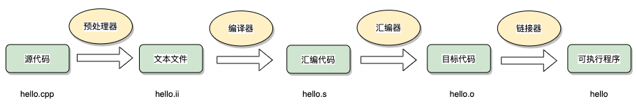
-
预处理：预处理阶段会对源代码进行处理，主要包括展开宏定义、处理条件编译指令（如#include、#define、#ifdef等）以及删除注释等。预处理的结果是生成一个经过宏展开和条件处理后的纯C++源代码文件。
-
编译（Compilation）：编译阶段将预处理后的源代码翻译为汇编语言，生成汇编代码。编译器会进行词法分析、语法分析和语义分析，检查代码的正确性，并生成中间代码表示。
-
汇编：汇编阶段将汇编代码转换为机器可以执行的目标文件。汇编器会将汇编代码转化为机器指令，并生成与机器硬件平台相关的目标文件（通常以".obj"或".o"为扩展名）。
-
链接：链接阶段将目标文件与其他必要的库文件链接在一起，生成可执行程序。链接器会解析目标文件中的符号引用，将其与其他目标文件或库文件中的符号定义进行匹配，最终生成一个完整的可执行文件。在链接阶段，还会进行地址重定位、符号解析、符号表生成等操作，确保程序的正确执行。
内存泄露怎么避免？
可以使用使用智能指针，C++提供了智能指针（如std::shared_ptr、std::unique_ptr等），可以自动管理动态分配的内存。智能指针利用了RAII（资源获取即初始化）的原则，在对象生命周期结束时自动释放内存，避免了显式调用delete的繁琐和遗。
也可以使用内存泄漏检测工具（如Valgrind等）来分析程序，在程序运行过程中检测内存泄漏，并及时修复。
解释一下c++的继承、封装、多态。
-
继承：C++中的继承允许一个类（派生类/子类）从另一个类（基类/父类）继承属性和方法。派生类可以通过继承基类来扩展和重用代码。在C++中，派生类可以通过关键字"public"、"protected"或"private"来指定继承的方式和访问权限。
-
封装：C++中的封装将数据和操作数据的函数捆绑在一起，对外隐藏实现细节。通过使用类的访问修饰符（public、protected、private），我们可以控制对类的成员的访问权限。公共成员（public）可以被其他类和函数访问，私有成员（private）只能被本类的成员访问，保护成员（protected）可以被派生类的成员访问。
-
多态：C++中的多态允许不同类型的对象对同一消息做出响应，具体行为取决于对象的实际类型。通过使用虚函数（virtual function）和虚函数表（vtable），C++实现了运行时多态。多态可以通过基类指针或引用来实现，可以提高代码的灵活性和可复用性。
了解哪些数据结构？
- 数组：数组的内存空间是连续的，随机访问的时间复杂度是O1，适用于需要按索引访问元素的场景，但是插入和删除元素较慢，时间复杂度是On
- 链表：链表是由节点组成，节点之间是分散存储的，内存不连续，每个节点存储数据和指向下一个节点的指针。适用于频繁插入和删除元素的场景，随机访问元素较慢。
- 栈：栈是一种后进先出的数据结构，只允许在栈顶进行插入和删除操作。
- 队列：队列是一种先进先出（FIFO）的数据结构，允许在队尾插入元素，在队首删除元素。
- 树：树是一种非线性数据结构，由节点和边组成，每个节点可以有多个子节点。树适用于表示层次关系的场景，例如文件系统、组织结构等。
说一下队列和栈的区别
主要区别在于元素的插入和删除方式以及元素的访问顺序。
插入和删除方式：
- 队列：队列采用先进先出（FIFO）的方式，即新元素插入队尾，删除操作发生在队首。
- 栈：栈采用后进先出（LIFO）的方式，即新元素插入栈顶，删除操作也发生在栈顶。
元素的访问顺序：
- 队列：队列的元素按照插入的顺序进行访问，先插入的元素先被访问到。
- 栈：栈的元素按照插入的顺序进行访问，但是最后插入的元素先被访问到。
队列适用于需要按照插入顺序进行处理的场景，例如任务调度；
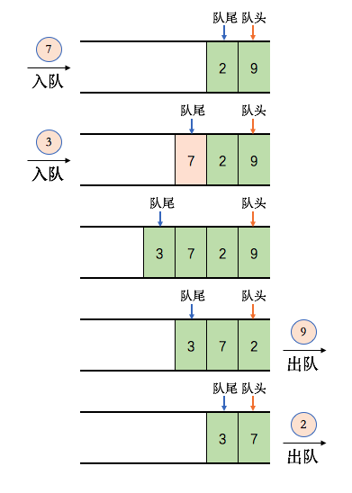
而栈适用于需要维护最近操作状态的场景，例如函数调用。
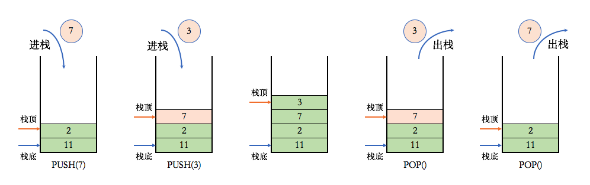